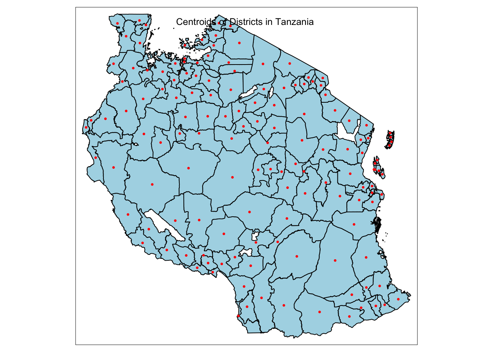

pacman::p_load(st,olsrr,e1071, ggstatsplot, ggpubr, sf, spdep, sfdep, GWmodel, tmap, tidyverse, gtsummary,see,performance,datawizard,gtsummary)Take Home Exercise 3: Modelling Geography of Financial Inclusion in Tanzania with Geographically Weighted Methods
1 Overview
1.1 Background
Financial inclusion plays a key role in promoting equitable economic growth by enabling individuals and businesses to access essential financial services such as banking, loans, insurance, and equity products. In Tanzania, financial inclusion initiatives have become a priority in addressing the needs of underserved populations, particularly those in rural or economically disadvantaged areas. These initiatives aim to improve household incomes, reduce income inequality, and foster inclusive economic participation by providing timely and affordable access to financial products and services(United Nations Capital Development Fund [UNCDF], 2024).
Despite significant progress in financial inclusion efforts, access to financial services is uneven across different geographical regions within Tanzania. Rural areas, particularly in districts with low levels of economic activity, often face greater challenges in accessing financial services compared to more urbanized districts. These spatial disparities raise important questions about the factors driving financial inclusion at the district level and how regional policies can be designed to promote more inclusive economic outcomes.
1.2 Objectives
This analysis aims to build an explanatory model using Multiple Linear Regression as well as Geographically Weighted Regression (GWR) to identify the key factors affecting financial inclusion across districts in Tanzania. By focusing on multiple socio-economic and infrastructural variables, this study will provide insights into how these factors vary geographically and influence financial access at a district level.
Specifically, the objectives are:
Identify Key Determinants: Determine the primary socio-economic and infrastructural factors that influence financial inclusion.
Examine Regional Variation: Explore how the effects of these factors vary across different districts, providing a localized understanding of financial inclusion.
2 Methodology
The explanatory model will be developed first using Multiple Linear Regression and Geographically Weighted Regression (GWR), which is a spatial extension of multiple linear regression that allows for localized variations in the relationships between predictors and the response variable—in this case, financial inclusion.
The process will follow these steps:
Defining dependent variable (y): Derive dependent variable which represents financial inclusion from the FinScope dataset.
Explanatory Variable Selection (x): Identify key predictor variables, both continuous and categorical, from the FinScope dataset. These will serve as explanatory variables in the model.
Model Building: Build the explanatory model using multiple linear regression techniques, enhanced by GWR to account for geographical variations. This will allow us to evaluate the influence of each predictor on financial inclusion across different districts.
Model Calibration and Validation: Calibrate the model to ensure that it effectively captures the localized relationships between financial inclusion and its determinants.
Spatial Visualization: Mapping the results of the GWR model to visualize how the effects of each factor vary geographically, will highlight districts where specific variables have a stronger or weaker influence on financial inclusion.
3 Loading R Packages
The following packages were used for this study:
| Package | Description |
|---|---|
| olsrr | For creating and evaluating ordinary least squares regression models. |
| ggstatsplot | for producing statistical visualizations that combine ggplot2 graphics with statistical results |
| e1071 | For checking skewness of variables |
| ggpubr | To create publication-ready visualizations with ggplot2 and arranging multiple plots |
| sf | For importing, managing, and handling geospatial data |
| sfdep | To analyze spatial relationships and incorporate them into regression models |
| spdep | For calculating spatial weights and conducting tests for spatial relationships |
| GWmodel | To explore spatially varying relationships between the dependent and independent variables |
| tmap | For thematic mapping, allowing us to visualize spatial data in an intuitive and aesthetically pleasing manner |
| tidyverse | For data manipulation, cleaning, and visualization |
| gtsummary | To create summary tables for regression results, providing a clear and concise presentation of model outputs |
| see | For visualizing model diagnostics and results |
| performance | For evaluating model performance and diagnostics |
| datawizard | To handle missing values, recode variables, and perform exploratory data analysis before modeling |
| gtsummary | To create publication ready summary tables |
We will use this code to load the packages mentioned:
4 Importing the Data
4.1 The Datasets
For this analysis, we will use two primary datasets: (1) FinScope Tanzania 2023, which provides district-level data on financial inclusion, and (2) district-level boundary GIS data from the geoBoundaries portal to facilitate spatial analysis.
FinScope Tanzania 2023: This dataset include comprehensive district-level data on access to financial services, covering indicators such as banking services, mobile money usage, savings, loans, and insurance. The dataset will be used to identify the key factors affecting financial inclusion and to develop the explanatory model.
District Boundary GIS Data: Geographic boundary data for the districts of Tanzania, sourced from the geoBoundaries, will enable us to link the financial inclusion data to specific geographic locations for spatial analysis using GWR.
4.2 Aspatial Data
The FinScope Tanzania dataset from 2023, was imported by using read_csv() package.
Then, the data was prepared for analysis with the following steps:
- We extract the columns with the variables chosen which will be explained in the Variable Selection section.
- Rename some district names to match the boundary dataset in section 4.3.
- Remove columns with all missing/NA values.
tanzania <- read_csv("data/rawdata/FinScope_Tanzania.csv") %>%
select(5, 9, 11, 13:14,16, 65:67,70:73, 82:83, 85, 95:103, 107:119, 125,
140, 142:151, 160:174, 177:178, 180, 183:192, 196, 215:223,
275:278, 294:306, 344:353, 361:372, 374:378, 395:397, 455:460,
495, 497, 507:529, 574:580, 591, 612, 650:651, 653, 655, 657,
678, 680:685, 697:698, 702:716, 718) %>%
mutate(dist_name = ifelse(dist_name == "Magharibi A", "Magharibi", dist_name),
dist_name = ifelse(dist_name == "Magharibi B", "Magharibi", dist_name),
dist_name = ifelse(dist_name == "Nyang'hwale", "Nyanghwale", dist_name),
dist_name = ifelse(dist_name == "Wanging'ombe", "Wangingombe", dist_name),
dist_name = ifelse(dist_name == "Tanganyika", "Tanga", dist_name))%>%
select(where(~ !all(is.na(.))))We will use glimpse() to quickly check the attributes.
glimpse(tanzania)Lastly, we will save the prepared dataframe into rds format.
write_rds(tanzania, "data/rds/tanzania.rds")tanzania <- read_rds("data/rds/tanzania.rds")4.3 Geospatial Data - Study Area
The geo Boundaries of Tanzania dataset, was imported by using st_read() package.
The dataset was prepared for analysis with the following steps:
We note that Tanzania is in WGS 84/ UTM Zone 37S. We will use st_transform to reproject coordinate reference system to EPSG: 32737 for Tanzania.
To perform left join with the aspatial dataset, we need a common column - districts name. Therefore, we need to change the variable, shapeName, to ‘dist_name’ to make it a common variable with the FinScope Tanzania dataset.
To ensure the districts are common, some districts will be renamed from “Arusha Urban” to “Arusha” as the same way it was displayed in FinScope Tanzania dataset. Since the FinScope Tanzania dataset already have a variable that classifies if the surveyee is residing in an urban or rural area, we do not need to have a separate district with the title Urban as it falls under the same district.
We will also remove some district names that are not present in the FinScope Tanzania dataset.
tanzbounds <- st_read(dsn = "data/rawdata/",
layer = "geoBoundaries-TZA-ADM2",
crs=4326) %>%
st_transform(crs=32737) %>%
rename(dist_name = shapeName) %>%
mutate(dist_name = ifelse(dist_name == "Arusha Urban", "Arusha", dist_name)) %>%
mutate(dist_name = ifelse(dist_name == "Meru", "Arumeru", dist_name)) %>%
mutate(dist_name = ifelse(dist_name == "Iringa Urban","Iringa", dist_name)) %>%
mutate(dist_name = ifelse(dist_name == "Bukoba Urban", "Bukoba", dist_name)) %>%
mutate(dist_name = ifelse(dist_name == "Mpanda Urban", "Mpanda", dist_name)) %>%
mutate(dist_name = ifelse(dist_name == "Kigoma Urban", "Kigoma", dist_name)) %>%
mutate(dist_name = ifelse(dist_name == "Moshi Urban", "Moshi", dist_name))%>%
mutate(dist_name = ifelse(dist_name == "Lindi Urban", "Lindi", dist_name))%>%
mutate(dist_name = ifelse(dist_name == "Musoma Urban", "Musoma", dist_name))%>%
mutate(dist_name = ifelse(dist_name == "Mbeya Urban", "Mbeya", dist_name)) %>%
mutate(dist_name = ifelse(dist_name == "Babati UrbanBabati Urban", "Babati", dist_name)) %>%
mutate(dist_name = ifelse(dist_name == "Dodoma Urban", "Dodoma", dist_name))%>%
mutate(dist_name = ifelse(dist_name == "Kibaha Urban", "Kibaha", dist_name))%>%
mutate(dist_name = ifelse(dist_name == "Morogoro Urban", "Morogoro", dist_name))%>%
mutate(dist_name = ifelse(dist_name == "Mtwara Urban", "Mtwara", dist_name))%>%
mutate(dist_name = ifelse(dist_name == "Njombe Urban", "Njombe", dist_name))%>%
mutate(dist_name = ifelse(dist_name == "Mtwara Urban", "Mtwara", dist_name))%>%
mutate(dist_name = ifelse(dist_name == "Shinyanga Urban", "Shinyanga", dist_name))%>%
mutate(dist_name = ifelse(dist_name == "Singida Urban", "Singida", dist_name))%>%
mutate(dist_name = ifelse(dist_name == "Songea Urban", "Songea", dist_name))%>%
mutate(dist_name = ifelse(dist_name == "Sumbawanga Urban", "Sumbawanga", dist_name))%>%
mutate(dist_name = ifelse(dist_name == "Tabora Urban", "Tabora", dist_name))%>%
mutate(dist_name = ifelse(dist_name == "Tanga Urban", "Tanga", dist_name)) %>%
mutate(dist_name = ifelse(dist_name == "Nyang'hwale", "Nyanghwale", dist_name)) %>%
mutate(dist_name = ifelse(dist_name == "Wanging'ombe", "Wangingombe", dist_name)) %>%
mutate(dist_name = ifelse(dist_name == "Butiam", "Butiama", dist_name)) %>%
mutate(dist_name = ifelse(dist_name == "Kahama Township Authority", "Kahama", dist_name)) %>%
mutate(dist_name = ifelse(dist_name == "Kasulu Township Authority", "Kasulu", dist_name)) %>%
mutate(dist_name = ifelse(dist_name == "Masasi Township Authority", "Masasi", dist_name)) %>%
mutate(dist_name = ifelse(dist_name == "Handeni Mji", "Handeni", dist_name))%>%
filter(!dist_name %in% c("Korogwe Township Authority","Mafia","Tunduma","Korogwe","Mafinga Township Authority","Makambako Township Authority")) %>%
select (-c("shapeISO","shapeID","shapeGroup","shapeType"))Reading layer `geoBoundaries-TZA-ADM2' from data source
`/Users/seesarhlakyi/Desktop/ssrhk/ISSS626-GAA/Take-home_Ex/Take-home_Ex03/data/rawdata'
using driver `ESRI Shapefile'
Simple feature collection with 170 features and 5 fields
Geometry type: MULTIPOLYGON
Dimension: XY
Bounding box: xmin: 29.58953 ymin: -11.76235 xmax: 40.44473 ymax: -0.983143
Geodetic CRS: WGS 84To ensure the study area is in the correct format, we will use st_crs to check.
st_crs(tanzbounds)Coordinate Reference System:
User input: EPSG:32737
wkt:
PROJCRS["WGS 84 / UTM zone 37S",
BASEGEOGCRS["WGS 84",
ENSEMBLE["World Geodetic System 1984 ensemble",
MEMBER["World Geodetic System 1984 (Transit)"],
MEMBER["World Geodetic System 1984 (G730)"],
MEMBER["World Geodetic System 1984 (G873)"],
MEMBER["World Geodetic System 1984 (G1150)"],
MEMBER["World Geodetic System 1984 (G1674)"],
MEMBER["World Geodetic System 1984 (G1762)"],
MEMBER["World Geodetic System 1984 (G2139)"],
ELLIPSOID["WGS 84",6378137,298.257223563,
LENGTHUNIT["metre",1]],
ENSEMBLEACCURACY[2.0]],
PRIMEM["Greenwich",0,
ANGLEUNIT["degree",0.0174532925199433]],
ID["EPSG",4326]],
CONVERSION["UTM zone 37S",
METHOD["Transverse Mercator",
ID["EPSG",9807]],
PARAMETER["Latitude of natural origin",0,
ANGLEUNIT["degree",0.0174532925199433],
ID["EPSG",8801]],
PARAMETER["Longitude of natural origin",39,
ANGLEUNIT["degree",0.0174532925199433],
ID["EPSG",8802]],
PARAMETER["Scale factor at natural origin",0.9996,
SCALEUNIT["unity",1],
ID["EPSG",8805]],
PARAMETER["False easting",500000,
LENGTHUNIT["metre",1],
ID["EPSG",8806]],
PARAMETER["False northing",10000000,
LENGTHUNIT["metre",1],
ID["EPSG",8807]]],
CS[Cartesian,2],
AXIS["(E)",east,
ORDER[1],
LENGTHUNIT["metre",1]],
AXIS["(N)",north,
ORDER[2],
LENGTHUNIT["metre",1]],
USAGE[
SCOPE["Engineering survey, topographic mapping."],
AREA["Between 36°E and 42°E, southern hemisphere between 80°S and equator, onshore and offshore. Kenya. Mozambique. Tanzania."],
BBOX[-80,36,0,42]],
ID["EPSG",32737]]Now that we have seen that study area is correct and names are properly changed, we will use the code chunk below to dissolve the geometries within each district into a single, unified shape using st_union(). By doing this, we ensure that each district has only one consolidated geometry, removing any duplicate shapes associated with that district. The .groups = 'drop' argument is included to simplify the output, dropping the grouping structure after summarizing.
tanzbounds <- tanzbounds %>%
group_by(dist_name) %>%
summarise(
geometry = st_union(geometry),
.groups = 'drop'
)Now we are ready to save the dataset.
write_rds(tanzbounds, "data/rds/tanzbounds.rds")tanzbounds<- read_rds("data/rds/tanzbounds.rds")5 The Dependent Variable
5.1 Financial Inclusion in Tanzania
Financial inclusion ensures that individuals and businesses have access to affordable financial products and services—spanning payments, savings, credit, and insurance—that meet their needs. It plays a crucial role in economic growth and poverty alleviation, enabling people to manage financial risks, invest in education, and improve livelihoods. According to the World Bank, financial inclusion is “a key enabler for reducing poverty and boosting shared prosperity by providing underserved populations access to essential financial services” (World Bank, 2023).
In Tanzania, financial inclusion is especially important for rural populations, where limited access to traditional banking infrastructure can hinder economic mobility. Many rely on informal financial services, which are often less secure and limit access to broader economic opportunities. Mobile financial services have had a transformative impact across Sub-Saharan Africa, enabling millions to participate in the financial system without needing a physical bank. In Tanzania, mobile money usage has become one of the foundation of financial inclusion, especially in rural and remote areas where mobile access is far more prevalent than traditional banking facilities (World Bank Group, 2024).
However, access to financial services remains uneven, with notable disparities between urban and rural regions. Understanding the factors that drive financial inclusion across various communities in Tanzania is essential to improve access and support inclusive economic growth. This study aims to create a robust dependent variable reflecting financial inclusion using the FinScope dataset, capturing financial engagement through the use of mobile money services.
5.2 Deriving The Dependent Variable - Mobile Money Usage
For this study, mobile money usage is used as a primary indicator of financial inclusion, reflecting the importance of mobile banking in bridging the financial access gap across Tanzania. By focusing on mobile money usage as a core indicator, this study recognizes mobile banking as a primary driver of financial inclusion in Tanzania. Mobile money services enable financial transactions in remote areas, where traditional banking infrastructure is sparse. This approach reflects the integration of mobile financial services into daily life and acknowledges their role in bridging the access gap for underserved communities.
The dependent variable, Mobile Money Usage (MMU), is calculated as follows:
\[MMU_i = \frac{\text{MobileMoneyUsers}_i}{\text{DistrictCount}_i}\]
where:
\(MobileMoneyUsers_i\) = Number of individuals in district i who use mobile money/banking services.
\(DistrictCount_i\) = Number of total records in that particular district i
Dividing by the total records in each district normalizes the measure of mobile money usage across districts, allowing for a more accurate comparison between areas of different population sizes. Without normalization, districts with larger populations would disproportionately influence the results, making it harder to observe patterns in smaller or more rural areas. A normalized indicator ensures that each district’s financial inclusion level is weighted by its own population, avoiding skewed results.
5.3 Dependent Variable Implications
Since Mobile Money Users is divided by number of records in the district, it is represented as a percentage or proportion of people that has access to mobile money in that given district.
Higher MMU Values: A higher Mobile Money Usage (MMU) value indicates greater financial inclusion within a district, suggesting that a substantial proportion of individuals in that area are using mobile money services. This often reflects improved access to essential financial transactions, enabling individuals to save, transfer funds, and manage payments conveniently. With more people using mobile money, there is likely an increase in financial security and accessibility, allowing residents to participate more actively in the economy. Higher MMU values suggest that individuals in these districts are more empowered to manage financial risks, save for future needs, and potentially invest in small businesses or educational expenses, contributing to overall economic resilience.
Lower MMU Value: In contrast, a lower MMU value implies limited mobile money usage within a district, often indicating lower financial inclusion. This can reflect barriers to accessing financial services, such as a lack of digital infrastructure, limited mobile network coverage, or economic challenges that prevent individuals from engaging with mobile money services. Individuals in areas with low MMU values may depend on informal financial mechanisms, which can carry higher risks, less security, and fewer opportunities for economic growth. Low MMU values suggest a need for targeted interventions to address the gaps in financial access, as these populations may be more vulnerable to financial instability, lack of savings, and limited economic opportunities, potentially hindering their capacity to break out of poverty cycles.
6 Data Wrangling
In the development of a multiple linear regression model, the selection of appropriate variables is critical to ensuring the model’s accuracy and interpretability. This section focuses on the selection of both categorical and continuous variables that will serve as predictors in our regression analysis.
Initially, we will extract a preliminary set of variables based on theoretical foundations and previous empirical research from the 722 variables of FinScope Tanzania dataset.
6.1 Categorical Variables
We will employ one-hot encoding to transform categorical variables into a format suitable for regression modeling. One-hot encoding allows us to create binary columns for each category, enabling the regression model to assess the impact of each nominal variable effectively. This approach ensures that we capture the distinct effects of categorical factors on the dependent variable while maintaining the integrity of the data.
Before we further prepare our variables (which are in the form of survey questions), we will convert the column names into a more R-friendly format using make.names().
colnames(tanzania) <- make.names(colnames(tanzania))We will use the following variables and code chunk to one-hot encode all the nominal variables as mentioned above. Some one hot encoded columns will be used to derive continuous variables as well.
| Variable | Justification for Selection | Modification |
|---|---|---|
| Cluster type | Urban-rural differences may impact access to mobile banking services due to differences in infrastructure, network coverage, and accessibility. | Encoded as two columns - ‘Urban’ and ‘Rural’ If respondent indicates ‘urban’, this variable will be 1 and 0 for rural. |
| Respondent gender | Gender may influence mobile banking adoption, as social and economic factors often create differences in financial access between men and women. | Encoded as two columns - ‘male’ and ‘female’ |
| Education Background | Education level may affect the likelihood of adopting mobile banking due to varying levels of digital literacy. | Encoded as eight columns - ‘NoFormalEducation’ and ‘SomePrimary’ and so on |
| Access to Mobile Phone and Internet | Directly related to mobile banking, as mobile phones are required to use mobile money and mobile banking services. Internet access can influence mobile banking adoption, particularly for smartphone-based banking services that require internet connectivity. | Encoded as two columns - ‘MobilePhone’ and ‘Internet’ (1 if respondent has access, 0 if not). |
| Mobile Phone’s Connection | The quality of mobile phone connection can impact user experience and satisfaction with mobile banking services. A poor connection may hinder transaction speed, reliability, and user confidence, thus influencing adoption rates. This variable allows for a understanding of barriers to mobile banking use. | Encoded as 4 columns - “NoPhoneConnection” “BadPhoneConnection” “GoodPhoneConnection” “ExcellentPhoneConnection” |
| Have 2 or more devices | Ownership of multiple devices may indicate a respondent’s comfort and familiarity with technology, potentially facilitating easier access to mobile banking services. This variable helps to identify tech-savvy users who may be more likely to engage with mobile banking. | Encoded as “Own2Phones” |
| If Phone is smart phone | The type of mobile device, particularly whether it is a smartphone, is significant because smartphones typically offer enhanced capabilities for mobile banking compared to basic phones. They allow access to apps and services that facilitate easier financial transactions, thus influencing mobile banking adoption. | Encoded as “SmartPhone |
| Using mobile phone to pay or lottery game | This variable captures the extent to which respondents are already engaging with their mobile phones for financial transactions or gaming. If individuals are using their phones for payments or other financial activities, they may be more inclined to adopt mobile banking services, making this a valuable predictor. | Encoded as “Phone_PayforThings” and “Phone_LotteryGaming” |
| Main Reason the respondent don’t own a phone | Understanding the reasons for not owning a phone provides insight into barriers that may prevent respondents from accessing mobile banking. By encoding various reasons, such as financial constraints or social restrictions, this variable can highlight the nature of mobile banking access challenges and inform targeted interventions to improve financial inclusion. | Encoded as 4 columns - “NoMoneyForPhone” “UseSomeoneElsePhone” “ParentsSpouseDontAllowPhone” “DontNeedPhone” |
| Financial Documents owned Bank/MFI Statements | Ownership of bank or MFI statements may indicate financial inclusion and readiness to adopt mobile banking. | Encoded as ‘BankMFIStatement’ |
| If Business is registered with government | Owning a registered business can increase the likelihood of using mobile banking for transactions. This variable also reflects formal economic activity, which may correlate with mobile banking usage. | Encoded as two columns - ‘BusinessRegistered_Yes’ and ‘BusinessRegistered_No’ |
| Coping Mechanisms(What they did when they could not meet spending needs) | Indicates financial behavior and reliance on financial services, which can influence the adoption of mobile banking for emergency needs. | Encoded as 10 columns - ‘UsedSavings’ and ‘BorrowedFromBank’ |
| Comfort with Banks | Reflects trust in formal financial institutions, which may correlate with comfort using mobile banking services. | Encoded as ‘ComfortableWithBank_Yes’ and ‘ComfortableWithBank_No’ |
| Financial Education | Financial literacy can influence the ability to understand and trust mobile banking services. | Encoded as ‘ReceivedFinancialEducation_Yes’ and ‘ReceivedFinancialEducation_No’ |
| Confidence in financial institutions | Trust in banks and mobile money may be a predictor of mobile banking adoption. | Encoded as “ConfidentWithBanks” and ‘ConfidentWithPensionFund’ and so on |
| If they have borrowed money from any financial institutions | Access to credit services from banks or MFIs can be linked to mobile banking adoption, especially for transactions. | Encoded as binary columns for each financial institution type such as ‘BorrowedFrom_Bank’ and ‘BorrowedFrom_MFI’ |
| How often a respondent use the payment type for purchases | Patterns in payment methods can reveal familiarity with financial technology and willingness to adopt mobile-based transactions. | Encoded as binary columns for each payment type such as Used_Cash, Used_ATM, Used_CreditCard and so on. |
| Reporting problems regarding financial matters | Access to or barriers in resolving financial issues could impact mobile banking adoption, especially if respondents face challenges that could be solved by mobile services. | Encoded as binary columns such as ‘Do_Not_Know_Where_To_Go’ and ‘Do_Not_Think_They_Care’ |
| Confidence and Trust in Insurance Companies | Confidence in formal financial institutions like insurance companies can influence openness to adopting other formal services, including mobile banking. | Encoded as relevant indicators such as Trust_Insurance_Companies |
| Issues Accessing Mobile/Online Financial Products | These barriers are directly relevant to mobile banking, as access issues like network failure and agent availability can significantly impact the usability and reliability of mobile money services. If respondents frequently experience these problems, they may be less likely to adopt or rely on mobile banking. Understanding these barriers helps identify structural challenges in mobile banking infrastructure that could hinder financial inclusion efforts. | Encoded as Network_Failure and Agent_Absent and so on |
| Access and relationship with moneylender | Engagement with informal lenders may indicate a lack of access to formal banking, which mobile banking could address. | Encoded as Moneylender_Access and Moneylender_TreatsWell |
tanzania_onehotencoded<- tanzania %>%
mutate(
Urban = ifelse(`Cluster.type` == "Urban", 1, 0),
Rural = ifelse(`Cluster.type` == "Rural", 1, 0)) %>%
mutate(
Male = ifelse(`C9..Respondent.gender.Interviewer.to.observe` == "Male", 1, 0),
Female = ifelse(`C9..Respondent.gender.Interviewer.to.observe` == "Female", 1, 0))%>%
mutate(
NoFormalEducation = ifelse(`C11..Highest.level.of.education.completed..Can.read.out` == "No formal education", 1, 0),
SomePrimary = ifelse(`C11..Highest.level.of.education.completed..Can.read.out` == "Some primary", 1, 0),
PrimaryCompleted = ifelse(`C11..Highest.level.of.education.completed..Can.read.out` == "Primary completed", 1, 0),
PostPrimaryTechnicalTraining = ifelse(`C11..Highest.level.of.education.completed..Can.read.out` == "Post primary technical training", 1, 0),
SomeSecondary = ifelse(`C11..Highest.level.of.education.completed..Can.read.out` == "Some secondary", 1, 0),
SecondaryCompleted_OLevel = ifelse(`C11..Highest.level.of.education.completed..Can.read.out` == "Secondary competed-O level", 1, 0),
SomeUniversityOrHigherEducation = ifelse(`C11..Highest.level.of.education.completed..Can.read.out` == "Some University or other higher education", 1, 0),
UniversityOrHigherEducationCompleted = ifelse(`C11..Highest.level.of.education.completed..Can.read.out` == "University or higher education completed", 1, 0))%>%
mutate(
MobilePhone = ifelse(`C23..Which.of.the.following.do.you.have.access..to..Mobile.phone` == "Yes", 1, 0),
Internet = ifelse(`C23..Which.of.the.following.do.you.have.access..to..Internet` == "Yes", 1, 0),
NoPhoneConnection = ifelse (`C24.3.How.good.is.the.mobile.phone.connection.from.your.home..would.you.say.that...` == "There is no connection",1,0),
BadPhoneConnection = ifelse (`C24.3.How.good.is.the.mobile.phone.connection.from.your.home..would.you.say.that...` == "It is bad – calls rarely connect, calls often drop, it is hard to hear what people say",1,0),
GoodPhoneConnection = ifelse (`C24.3.How.good.is.the.mobile.phone.connection.from.your.home..would.you.say.that...` == "It is good – calls sometimes drop, sound is often poor, although you can still understand what people say",1,0),
ExcellentPhoneConnection = ifelse (`C24.3.How.good.is.the.mobile.phone.connection.from.your.home..would.you.say.that...` == "It is excellent – calls mostly connect, sound is excellent",1,0)) %>%
mutate(
Own2MobilePhone = ifelse(`C24.1..Do.you.personally.own.a.mobile.phone.`== "2",1,0),
SmartPhone= ifelse(`C25..Is.your.phone.a.smart.phone.or.a.simple.mobile.phone..Smart.phone`== "Yes",1,0),
Phone_PayforThings = ifelse(`C25X2..Which.of.these.things.are.you.using..apps.on.your.phone.to.do...Pay.for.things` == "Yes",1,0),
Phone_LotteryGaming = ifelse(`C25X2..Which.of.these.things.are.you.using..apps.on.your.phone.to.do...Lottery..gaming` == "Yes",1,0),
NoMoneyForPhone = ifelse(`C26..What.is.the..main.reason..why.don.t.you.have.a.mobile.phone.` == "Don’t have enough money/expensive to buy the handset",1,0),
UseSomeoneElsePhone = ifelse(`C26..What.is.the..main.reason..why.don.t.you.have.a.mobile.phone.` == "Use someone else’s phone",1,0),
DontNeedPhone = ifelse(`C26..What.is.the..main.reason..why.don.t.you.have.a.mobile.phone.` == "Don’t want to / Don’t need it",1,0),
ParentSpouseDontAllowPhone = ifelse(`C26..What.is.the..main.reason..why.don.t.you.have.a.mobile.phone.` == "Parents/spouse/other don’t want/allow me to",1,0))%>%
mutate(
BankMFIStatement = ifelse(`C27..Which.of.the.following.documents.do.you.currently.have.in.your.name..Bank.MFI.Statement`== "Yes",1,0))%>%
mutate(
BusinessRegistered_Yes = ifelse(`X6.4a.Is.your.business.registered.with.any.government.authority.` == "Yes", 1, 0),
BusinessRegistered_No = ifelse(`X6.4a.Is.your.business.registered.with.any.government.authority.` == "No", 1, 0),
) %>%
mutate(
Advice_HouseholdMember = ifelse(`E.3.3..Who.do.you.talk.with.for.advice.about.money.matters..A.household.member` == "Yes", 1, 0),
Advice_FamilyMember = ifelse(`E.3.3..Who.do.you.talk.with.for.advice.about.money.matters..Another.family.member` == "Yes", 1, 0),
Advice_Employer = ifelse(`E.3.3..Who.do.you.talk.with.for.advice.about.money.matters..Employer` == "Yes", 1, 0),
Advice_Bank = ifelse(`E.3.3..Who.do.you.talk.with.for.advice.about.money.matters..Bank` == "Yes", 1, 0),
Advice_Microfinance = ifelse(`E.3.3..Who.do.you.talk.with.for.advice.about.money.matters..Microfinance.institution` == "Yes", 1, 0),
Advice_SACCOS = ifelse(`E.3.3..Who.do.you.talk.with.for.advice.about.money.matters..Savings.and.credit.cooperative..SACCOS.` == "Yes", 1, 0),
Advice_FinancialAdvisor = ifelse(`E.3.3..Who.do.you.talk.with.for.advice.about.money.matters..Financial.advisor` == "Yes", 1, 0),
Advice_FarmersAssociation = ifelse(`E.3.3..Who.do.you.talk.with.for.advice.about.money.matters..Farmers.association` == "Yes", 1, 0),
Advice_BusinessAssociation = ifelse(`E.3.3..Who.do.you.talk.with.for.advice.about.money.matters..Business.association` == "Yes", 1, 0),
Advice_SavingsGroup = ifelse(`E.3.3..Who.do.you.talk.with.for.advice.about.money.matters..Savings.group` == "Yes", 1, 0),
Advice_Moneylender = ifelse(`E.3.3..Who.do.you.talk.with.for.advice.about.money.matters..Moneylender.in.community` == "Yes", 1, 0),
Advice_GovernmentOfficial = ifelse(`E.3.3..Who.do.you.talk.with.for.advice.about.money.matters..Government.official` == "Yes", 1, 0),
Advice_VillageElder = ifelse(`E.3.3..Who.do.you.talk.with.for.advice.about.money.matters..Village.elder.elder` == "Yes", 1, 0),
Advice_OtherSpecify = ifelse(`E.3.3..Who.do.you.talk.with.for.advice.about.money.matters..Other.specify` == "Yes", 1, 0),
Advice_NoOne = ifelse(`E.3.3..Who.do.you.talk.with.for.advice.about.money.matters..I.do.not.speak.with.anyone` == "Yes", 1, 0)
)%>%
mutate(
UsedSavings = ifelse(`E.7.N.1..Last.12.months...what.did.you.do.when.you.couldn.t.meet.your.regular.spending.needs._Used.savings` == "Yes", 1, 0),
BorrowedFromBank = ifelse(`E.7.N.1..Last.12.months...what.did.you.do.when.you.couldn.t.meet.your.regular.spending.needs._Borrowed.from.a.bank.MFI.SACCO` == "Yes", 1, 0),
BorrowedThroughMM = ifelse(`E.7.N.1..Last.12.months...what.did.you.do.when.you.couldn.t.meet.your.regular.spending.needs._Borrowed.money.through.MM` == "Yes", 1, 0),
BorrowedFromMoneyLender = ifelse(`E.7.N.1..Last.12.months...what.did.you.do.when.you.couldn.t.meet.your.regular.spending.needs._Borrowed.from.money.lender` == "Yes", 1, 0),
BorrowedFromFriendFamily = ifelse(`E.7.N.1..Last.12.months...what.did.you.do.when.you.couldn.t.meet.your.regular.spending.needs._Borrowed.from.friend.family.community` == "Yes", 1, 0),
GotAssistanceFromFamily = ifelse(`E.7.N.1..Last.12.months...what.did.you.do.when.you.couldn.t.meet.your.regular.spending.needs._Got.assistance.from.family.friends.community..that.I.did.not.need.to.repay.` == "Yes", 1, 0),
SoldLivestock = ifelse(`E.7.N.1..Last.12.months...what.did.you.do.when.you.couldn.t.meet.your.regular.spending.needs._Sold.livestock` == "Yes", 1, 0),
CutSpending = ifelse(`E.7.N.1..Last.12.months...what.did.you.do.when.you.couldn.t.meet.your.regular.spending.needs._Cut.spending` == "Yes", 1, 0),
WorkedMore = ifelse(`E.7.N.1..Last.12.months...what.did.you.do.when.you.couldn.t.meet.your.regular.spending.needs._Worked.more` == "Yes", 1, 0),
Others_CouldntMeetNeeds = ifelse(`E.7.N.1..Last.12.months...what.did.you.do.when.you.couldn.t.meet.your.regular.spending.needs._Others` == "Yes", 1, 0)
)%>%
mutate(
ComfortableWithBank_Yes = ifelse(`E.5.1..You.feel.comfortable.to.go.into.a.bank.or.another.financial.institution` == "TRUE", 1, 0),
ComfortableWithBank_No = ifelse(`E.5.1..You.feel.comfortable.to.go.into.a.bank.or.another.financial.institution` == "FALSE", 1, 0), ReceivedFinancialEducation_Yes = ifelse(`E.5.2..You.have.received.some.financial.education.in.your.life` == "TRUE", 1, 0),
ReceivedFinancialEducation_No = ifelse(`E.5.2..You.have.received.some.financial.education.in.your.life` == "FALSE", 1, 0),
ConfidentWithBanks = ifelse(`F.3.2.1..I.will.read.for.you.a.list.of.institutions..and.pease.tell.me.which.you.feel.confident.with.SAVINGS.your.money.with._Banks` == "Yes", 1, 0),
ConfidentWithMFIs = ifelse(`F.3.2.1..I.will.read.for.you.a.list.of.institutions..and.pease.tell.me.which.you.feel.confident.with.SAVINGS.your.money.with._MFIs` == "Yes", 1, 0),
ConfidentWithSACCOs = ifelse(`F.3.2.1..I.will.read.for.you.a.list.of.institutions..and.pease.tell.me.which.you.feel.confident.with.SAVINGS.your.money.with._SACCOs` == "Yes", 1, 0),
ConfidentWithMobileMoney = ifelse(`F.3.2.1..I.will.read.for.you.a.list.of.institutions..and.pease.tell.me.which.you.feel.confident.with.SAVINGS.your.money.with._Mobile.money.operators` == "Yes", 1, 0),
ConfidentWithPensionFund = ifelse(`F.3.2.1..I.will.read.for.you.a.list.of.institutions..and.pease.tell.me.which.you.feel.confident.with.SAVINGS.your.money.with._Pension.fund` == "Yes", 1, 0),
ConfidentWithSavingsGroups = ifelse(`F.3.2.1..I.will.read.for.you.a.list.of.institutions..and.pease.tell.me.which.you.feel.confident.with.SAVINGS.your.money.with._Savings.groups.CMGs` == "Yes", 1, 0),
ConfidentWithFamilyFriends = ifelse(`F.3.2.1..I.will.read.for.you.a.list.of.institutions..and.pease.tell.me.which.you.feel.confident.with.SAVINGS.your.money.with._Family.friends` == "Yes", 1, 0),
ConfidentWithUTTs = ifelse(`F.3.2.1..I.will.read.for.you.a.list.of.institutions..and.pease.tell.me.which.you.feel.confident.with.SAVINGS.your.money.with._UTTs` == "Yes", 1, 0),
BorrowedFrom_Bank = ifelse(`G.5.2.Did.you.borrow.money.from.the.following..Bank` == "Yes", 1, 0),
BorrowedFrom_MFI = ifelse(`G.5.2.Did.you.borrow.money.from.the.following..Microfinance.institution.such.as` == "Yes", 1, 0),
BorrowedFrom_SACCO = ifelse(`G.5.2.Did.you.borrow.money.from.the.following..SACCOS` == "Yes", 1, 0),
BorrowedFrom_MobileMoney = ifelse(`G.5.2.Did.you.borrow.money.from.the.following..A.mobile.money.service.provider` == "Yes", 1, 0),
BorrowedFrom_PensionFund = ifelse(`G.5.2.Did.you.borrow.money.from.the.following..A.pension.fund` == "Yes", 1, 0),
BorrowedFrom_Employer = ifelse(`G.5.2.Did.you.borrow.money.from.the.following..Your.employer` == "Yes", 1, 0),
BorrowedFrom_Family_PayBack = ifelse(`G.5.2.Did.you.borrow.money.from.the.following..Family.friends.that.you.had.to.pay.back` == "Yes", 1, 0),
BorrowedFrom_Family_NoPayBack = ifelse(`G.5.2.Did.you.borrow.money.from.the.following..Family.friends.that.you.did.not.have.to.pay.back` == "Yes", 1, 0),
BorrowedFrom_SavingsGroup = ifelse(`G.5.2.Did.you.borrow.money.from.the.following..Savings.group` == "Yes", 1, 0),
BorrowedFrom_CommunityLender = ifelse(`G.5.2.Did.you.borrow.money.from.the.following..Someone.in.the.community.who.lend` == "Yes", 1, 0),
BorrowedFrom_OtherSource = ifelse(`G.5.2.Did.you.borrow.money.from.the.following..Did.you.borrow.money.from.another.source` == "Yes", 1, 0),
Used_Cash = ifelse(`X2.1.In.the.past.12.months..how.often.did.you.use.the.Cash.for.purchases.of.goods` == "Yes", 1, 0),
Used_ATM_DebitCard = ifelse(`X2.2.In.the.past.12.months..how.often.did.you.use.the.ATM...Debit.card.for.purchases.of.goods` == "Yes", 1, 0),
Used_Cash = ifelse(`X2.1.In.the.past.12.months..how.often.did.you.use.the.Cash.for.purchases.of.goods` == "Never", 0, 1),
Used_ATM_DebitCard = ifelse(`X2.2.In.the.past.12.months..how.often.did.you.use.the.ATM...Debit.card.for.purchases.of.goods` == "Never", 0, 1),
Used_CreditCard = ifelse(`X2.3.In.the.past.12.months..how.often.did.you.use.the.Credit.card.for.purchases.of.goods` == "Never", 0, 1),
Used_BankTransfer = ifelse(`X2.4.In.the.past.12.months..how.often.did.you.use.the.Bank.transfer.for.purchases.of.goods` == "Never", 0, 1),
Used_MobileMoney = ifelse(`X2.5.In.the.past.12.months..how.often.did.you.use.the.Mobile.money.for.purchases.of.goods` == "Never", 0, 1),
Used_Cryptocurrency = ifelse(`X2.6.In.the.past.12.months..how.often.did.you.use.the.Cryptocurrency.for.purchases.of.goods` == "Never", 0, 1),
Used_QR_Code = ifelse(`X3.1.In.the.past.12.months..how.often.did.you.use.the.QR.code..for.purchases.of.goods` == "Never", 0, 1),
Used_POS = ifelse(`X3.2.In.the.past.12.months..how.often.did.you.use.the.POS.for.purchases.of.goods` == "Never", 0, 1),
Used_LipaNamba = ifelse(`X3.3.In.the.past.12.months..how.often.did.you.use.the.Lipa.Namba.for.purchases.of.goods` == "Never", 0, 1),
Used_AZAMPay = ifelse(`X3.4.In.the.past.12.months..how.often.did.you.use.the.AZAM.Pay.for.purchases.of.goods` == "Never", 0, 1),
Do_Not_Know_Where_To_Go = ifelse(`J1.7.Why.don.t.you.report.problems..I.do.not.know.where.to.go` == "Yes", 1, 0),
Places_Not_In_My_Area = ifelse(`J1.7.Why.don.t.you.report.problems..The.places.are.not.in.my.area` == "Yes", 1, 0),
Do_Not_Think_They_Care = ifelse(`J1.7.Why.don.t.you.report.problems..I.do.not.think.they.care.about` == "Yes", 1, 0),
Trust_Insurance_Companies = ifelse(`X1.3.Please.tell.me.which.of.the.following.you.is.true.for.you...You.trust.insurance.companies.to.pay.out.when.something.does.go.wrong` == "Yes", 1, 0),
Insurance_Good_Idea = ifelse(`X1.3.Please.tell.me.which.of.the.following.you.is.true.for.you...Insurance.is.a.good.idea.for.everyone` == "Yes", 1, 0),
Have_Insurance_Cover = ifelse(`X2.Do.you.have.insurance.cover.` == "Yes", 1, 0),
Network_Failure = ifelse(`X10.1.In.the.past.12.months.have.you.experienced.any.of.the.following.when.you.wanted.to.use.mobile.money._Network.failure` == "Yes", 1, 0),
Agent_Absent = ifelse(`X10.1.In.the.past.12.months.have.you.experienced.any.of.the.following.when.you.wanted.to.use.mobile.money._Agent.absent.not.available` == "Yes", 1, 0),
Agent_No_Cash_Float = ifelse(`X10.1.In.the.past.12.months.have.you.experienced.any.of.the.following.when.you.wanted.to.use.mobile.money._Agent.didn.t.have.enough.cash.float` == "Yes", 1, 0),
Agent_Overcharged = ifelse(`X10.1.In.the.past.12.months.have.you.experienced.any.of.the.following.when.you.wanted.to.use.mobile.money._Agent.overcharged.for.transactions` == "Yes", 1, 0),
Lost_Money = ifelse(`X10.1.In.the.past.12.months.have.you.experienced.any.of.the.following.when.you.wanted.to.use.mobile.money._Lost.money` == "Yes", 1, 0),
Agent_Requested_PIN = ifelse(`X10.1.In.the.past.12.months.have.you.experienced.any.of.the.following.when.you.wanted.to.use.mobile.money._Agent.wanted.you.to.reveal.your.PIN.number` == "Yes", 1, 0),
Other_Problems = ifelse(`X10.1.In.the.past.12.months.have.you.experienced.any.of.the.following.when.you.wanted.to.use.mobile.money._Any.other.problem` == "Yes", 1, 0),
Moneylender_Access = ifelse(`X4b.Please.tell.me.which.of.the.following.statements.you.agree.with..You.can.use.or.access.your.moneylender.whenever.you.need.to` == "Yes", 1, 0),
Moneylender_TreatsWell = ifelse(`X4b.Please.tell.me.which.of.the.following.statements.you.agree.with..Your.moneylender.always.treats.you.well` == "Yes", 1, 0),
Moneylender_InfoClear = ifelse(`X4b.Please.tell.me.which.of.the.following.statements.you.agree.with..Before.you.took.out.a.loan.with.your.moneylender..you.got.as.much.info.as.needed.and.it.was.easy.to.understand` == "Yes", 1, 0),
Moneylender_NeedsMet = ifelse(`X4b.Please.tell.me.which.of.the.following.statements.you.agree.with..The.products.and.services.offered.by.your.moneylender.meets.your.financial.needs` == "Yes", 1, 0),
Moneylender_FeesReasonable = ifelse(`X4b.Please.tell.me.which.of.the.following.statements.you.agree.with..Your.moneylender.s.fees.and.charges.are.reasonable` == "Yes", 1, 0),
Moneylender_CustomerSupport = ifelse(`X4b.Please.tell.me.which.of.the.following.statements.you.agree.with..You.are.satisfied.with.your.moneylender.s.customer.support` == "Yes", 1, 0),
FORM_INVESTMENTS = ifelse(FORM_INVESTMENTS == "FORM_INVESTMENTS", 1, 0),
PayingBack_Yes = ifelse(`G.2.4..Have.you..in.the.past.12.months..been.paying.back.money.that.you.borrowed.` == "Yes", 1, 0),
PayingBack_No = ifelse(`G.2.4..Have.you..in.the.past.12.months..been.paying.back.money.that.you.borrowed.` == "No", 1, 0),
MobileMoney = ifelse(Mobile.money == "MM", 1, 0)
) We will ensure these newly encoded variables are numeric format and all NA will be replaced by 0.
tanzania_onehotencoded <- tanzania_onehotencoded %>%
mutate_at(vars(204:312), ~ as.numeric(replace_na(., 0)))Now, we will aggregate the one hot encoded variables to group by district since our analysis on district level and not on each respondent level.
The following table explains the code chunk below and how the variables will be grouped.
| Variable | District Level Transformation (Group by) |
|---|---|
| Cluster type | Percentage of Urban for each district ( to reduce multicollinearity in regression as Rural and Urban will add up to 1, we will only choose one out of the two) |
| Respondent gender | Ratio of Male vs Female (1: equal number, <1: less Male than Female, >1: More Male than Female, 0: No male in this district) *To reduce multicollinearity, we will not be using the same denominator, number of total respondents in district, as we did in Cluster type. |
| Education Background | Ratio of poeple with No Formal Education vs other categories of education fromPrimary ~ University (1: equal number, <1: less people with no formal education than people with some formal education, >1: More people with no formal education than people with some formal education, 0: All respondents have some kind of education in this district; there is no one without) |
| Access to Mobile Phone and Internet | Sum/Count of each category for each district |
| Mobile Phone’s Connection | Sum/Count of each category for each district |
| Have 2 or more devices | Sum/Count of each category for each district |
| If Phone is smart phone | Sum/Count of each category for each district |
| Using mobile phone to pay or lottery game | Sum/Count of each category for each district |
| Financial Documents owned | Sum/Count of each category for each district |
| If Business is registered with government | Ratio of Registered Businesses vs Not Registered (1: equal number, <1: less Registered Businesses than Not, >1: More Registered Businesses than Not, 0: No registered business in this district) |
| Coping Mechanisms( What they did when they could not meet spending needs) | Sum/Count of each category for each district |
| Comfort with banks | Ratio of People comfortable with Banks vs Not comfortable (1: equal number, <1: less people comfortable with banks than Not, >1: More people comfortable with banks than Not, 0: No one is comfortable with banks in this district) |
| Financial Education | Ratio of People that received financial education vs No financial education (1: equal number, <1: less people received financial edcation than Not, >1: More people received financial education than Not, 0: No one received financial education in this district) |
| Confidence in financial institutions | Sum/Count of each category for each district |
| If they have borrowed money from any financial institutions | Sum/Count of each category for each district |
| How often a respondent use the payment type for purchases | Sum/Count of each category for each district |
| Reporting problems regarding financial matters | Sum/Count of each category for each district |
| Confidence and Trust in Insurance Companies | Sum/Count of each category for each district |
| Insurance ownership | Sum/Count of each category for each district |
| Issues accessing mobile/online financial products | Sum/Count of each category for each district |
| Access and relationship with moneylender | Sum/Count of each category for each district |
categorical_var <- tanzania_onehotencoded %>%
group_by(dist_name) %>%
summarise(
district_count = n(), # total records in each district
Urban = ifelse(
(sum(Urban, na.rm = TRUE) + sum(Rural, na.rm = TRUE)) == 0,
0,
sum(Urban, na.rm = TRUE) / (sum(Urban, na.rm = TRUE) + sum(Rural, na.rm = TRUE))
), # Percentage of Urban
Male_Female_Ratio =sum(Male, na.rm = TRUE) / sum(Female, na.rm = TRUE), # Ratio of Male to Female in each district
Registered_YesNo_Ratio =sum(BusinessRegistered_Yes, na.rm = TRUE) / sum(BusinessRegistered_No, na.rm = TRUE)
, # Ratio of Registered Businesses vs Not Registered
ComfortableBank_YesNo_Ratio =sum(ComfortableWithBank_Yes, na.rm = TRUE) / sum(ComfortableWithBank_No, na.rm = TRUE), # Ratio of Comfortable with Bank vs Not Comfortable
PayingBack_YesNo_Ratio =sum(PayingBack_Yes, na.rm = TRUE) / sum(PayingBack_No, na.rm = TRUE), # Ratio of People that currently owes money vs people that does not
FinancialEducation_YesNo_Ratio =sum(ReceivedFinancialEducation_Yes, na.rm = TRUE) / sum(ReceivedFinancialEducation_No, na.rm = TRUE), # Ratio of People Received Financial Education vs No Financial Education
NoEdu_SomeEdu = sum(NoFormalEducation, na.rm = TRUE) / (sum(SomePrimary, na.rm = TRUE) +sum(PrimaryCompleted, na.rm = TRUE) + sum(PostPrimaryTechnicalTraining, na.rm = TRUE) + sum(SomeSecondary, na.rm = TRUE) + sum(SecondaryCompleted_OLevel, na.rm = TRUE) + sum(SomeUniversityOrHigherEducation, na.rm = TRUE) + sum(UniversityOrHigherEducationCompleted, na.rm = TRUE)), #Ratio of People Received No Education vs Some Education
MobilePhone = sum(MobilePhone, na.rm = TRUE),
Internet = sum(Internet, na.rm = TRUE),
NoPhoneConnection_Some= sum(NoPhoneConnection, na.rm = TRUE) / (sum(BadPhoneConnection, na.rm = TRUE) +sum(GoodPhoneConnection, na.rm = TRUE)+sum(ExcellentPhoneConnection, na.rm = TRUE)), #Ratio of People with No connection at all vs Some
Own2MobilePhone = sum(Own2MobilePhone, na.rm = TRUE),
NoPhoneConnection= sum(NoPhoneConnection, na.rm = TRUE),
BadPhoneConnection= sum(BadPhoneConnection, na.rm = TRUE),
GoodPhoneConnection= sum(GoodPhoneConnection, na.rm = TRUE),
ExcellentPhoneConnection= sum(ExcellentPhoneConnection, na.rm = TRUE),
SmartPhone = sum(SmartPhone, na.rm = TRUE),
Phone_PayforThings = sum(Phone_PayforThings, na.rm = TRUE),
Phone_LotteryGaming = sum(Phone_LotteryGaming, na.rm = TRUE),
NoMoneyForPhone = sum(NoMoneyForPhone, na.rm = TRUE),
UseSomeoneElsePhone = sum(UseSomeoneElsePhone, na.rm = TRUE),
DontNeedPhone = sum(DontNeedPhone, na.rm = TRUE),
ParentSpouseDontAllowPhone = sum(ParentSpouseDontAllowPhone, na.rm = TRUE),
BankMFIStatement = sum(BankMFIStatement, na.rm = TRUE),
ConfidentWithBanks = sum(ConfidentWithBanks, na.rm = TRUE),
ConfidentWithMFIs = sum(ConfidentWithMFIs, na.rm = TRUE),
ConfidentWithSACCOs = sum(ConfidentWithSACCOs, na.rm = TRUE),
ConfidentWithMobileMoney = sum(ConfidentWithMobileMoney, na.rm = TRUE),
ConfidentWithPensionFund = sum(ConfidentWithPensionFund, na.rm = TRUE),
ConfidentWithSavingsGroups = sum(ConfidentWithSavingsGroups, na.rm = TRUE),
ConfidentWithFamilyFriends = sum(ConfidentWithFamilyFriends, na.rm = TRUE),
ConfidentWithUTTs = sum(ConfidentWithUTTs, na.rm = TRUE),
BorrowedFrom_Bank = sum(BorrowedFrom_Bank, na.rm = TRUE),
BorrowedFrom_MFI = sum(BorrowedFrom_MFI, na.rm = TRUE),
BorrowedFrom_SACCO = sum(BorrowedFrom_SACCO, na.rm = TRUE),
BorrowedFrom_MobileMoney = sum(BorrowedFrom_MobileMoney, na.rm = TRUE),
BorrowedFrom_PensionFund = sum(BorrowedFrom_PensionFund, na.rm = TRUE),
BorrowedFrom_Employer = sum(BorrowedFrom_Employer, na.rm = TRUE),
BorrowedFrom_Family_PayBack = sum(BorrowedFrom_Family_PayBack, na.rm = TRUE),
BorrowedFrom_Family_NoPayBack = sum(BorrowedFrom_Family_NoPayBack, na.rm = TRUE),
BorrowedFrom_SavingsGroup = sum(BorrowedFrom_SavingsGroup, na.rm = TRUE),
BorrowedFrom_CommunityLender = sum(BorrowedFrom_CommunityLender, na.rm = TRUE),
BorrowedFrom_OtherSource = sum(BorrowedFrom_OtherSource, na.rm = TRUE),
BorrowedFrom_MoneyLender = sum(BorrowedFromMoneyLender, na.rm = TRUE),
BorrowedFrom_FriendFamily = sum(BorrowedFromFriendFamily, na.rm = TRUE),
GotAssistanceFrom_Family = sum(GotAssistanceFromFamily, na.rm = TRUE),
SoldLivestock = sum(SoldLivestock, na.rm = TRUE),
CutSpending = sum(CutSpending, na.rm = TRUE),
WorkedMore = sum(WorkedMore, na.rm = TRUE),
Advice_HouseholdMember = sum(Advice_HouseholdMember, na.rm = TRUE),
Advice_FamilyMember = sum(Advice_FamilyMember, na.rm = TRUE),
Advice_Employer = sum(Advice_Employer, na.rm = TRUE),
Advice_Bank = sum(Advice_Bank, na.rm = TRUE),
Advice_Microfinance = sum(Advice_Microfinance, na.rm = TRUE),
Advice_SACCOS = sum(Advice_SACCOS, na.rm = TRUE),
Advice_FinancialAdvisor = sum(Advice_FinancialAdvisor, na.rm = TRUE),
Advice_FarmersAssociation = sum(Advice_FarmersAssociation, na.rm = TRUE),
Advice_BusinessAssociation = sum(Advice_BusinessAssociation, na.rm = TRUE),
Advice_SavingsGroup = sum(Advice_SavingsGroup, na.rm = TRUE),
Advice_Moneylender = sum(Advice_Moneylender, na.rm = TRUE),
Advice_GovernmentOfficial = sum(Advice_GovernmentOfficial, na.rm = TRUE),
Advice_VillageElder = sum(Advice_VillageElder, na.rm = TRUE),
Advice_OtherSpecify = sum(Advice_OtherSpecify, na.rm = TRUE),
Advice_NoOne = sum(Advice_NoOne, na.rm = TRUE),
UsedSavings = sum(UsedSavings, na.rm = TRUE),
Others_CouldntMeetNeeds = sum(Others_CouldntMeetNeeds, na.rm = TRUE),
Used_Cash = sum(Used_Cash, na.rm = TRUE),
Used_ATM_DebitCard = sum(Used_ATM_DebitCard, na.rm = TRUE),
Used_CreditCard = sum(Used_CreditCard, na.rm = TRUE),
Used_MobileMoney = sum(Used_MobileMoney, na.rm = TRUE),
Used_Cryptocurrency = sum(Used_Cryptocurrency, na.rm = TRUE),
Used_QR_Code = sum(Used_QR_Code, na.rm = TRUE),
Used_POS = sum(Used_POS, na.rm = TRUE),
Used_LipaNamba = sum(Used_LipaNamba, na.rm = TRUE),
Used_AZAMPay = sum(Used_AZAMPay, na.rm = TRUE),
Do_Not_Know_Where_To_Go = sum(Do_Not_Know_Where_To_Go, na.rm = TRUE),
Places_Not_In_My_Area = sum(Places_Not_In_My_Area, na.rm = TRUE),
Do_Not_Think_They_Care = sum(Do_Not_Think_They_Care, na.rm = TRUE),
Trust_Insurance_Companies = sum(Trust_Insurance_Companies, na.rm = TRUE),
Insurance_Good_Idea = sum(Insurance_Good_Idea, na.rm = TRUE),
Have_Insurance_Cover = sum(Have_Insurance_Cover,na.rm = TRUE),
Network_FailureMM = sum(Network_Failure, na.rm = TRUE),
Agent_AbsentMM = sum(Agent_Absent, na.rm = TRUE),
Agent_No_Cash_FloatMM = sum(Agent_No_Cash_Float, na.rm = TRUE),
Agent_OverchargedMM = sum(Agent_Overcharged, na.rm = TRUE),
Lost_MoneyMM = sum(Lost_Money, na.rm = TRUE),
Agent_Requested_PINMM = sum(Agent_Requested_PIN, na.rm = TRUE),
Other_ProblemsMM = sum(Other_Problems, na.rm = TRUE),
Moneylender_Access = sum(Moneylender_Access, na.rm = TRUE),
Moneylender_TreatsWell = sum(Moneylender_TreatsWell, na.rm = TRUE),
Moneylender_InfoClear = sum(Moneylender_InfoClear, na.rm = TRUE),
Moneylender_NeedsMet = sum(Moneylender_NeedsMet, na.rm = TRUE),
Moneylender_FeesReasonable = sum(Moneylender_FeesReasonable, na.rm = TRUE),
Moneylender_CustomerSupport = sum(Moneylender_CustomerSupport, na.rm = TRUE),
FORM_INVESTMENTS = sum(FORM_INVESTMENTS, na.rm = TRUE),
MobileMoney = sum(MobileMoney,na.rm = TRUE)
)6.2 Continuous Variables
The following are the chosen continuous variables for our initial model:
| Variable | Justification for Selection | District Level (Group by) |
|---|---|---|
| Age | Age is a critical demographic variable that often influences various socio-economic outcomes. It can affect financial behaviors, access to resources, and the types of assistance individuals might require. | Mean Age at each district |
| Amount Owed | The amount of debt an individual holds may influence their adoption of mobile banking, as those with higher financial obligations may seek convenient options for managing and repaying debt. Mobile money services can facilitate easier debt payments and transfers, making mobile banking particularly valuable for financially burdened individuals. Understanding average debt levels in each district can reveal areas where mobile banking may have higher utility due to financial distress. | Mean Amount Owed at each district |
| Money Spent on Betting | Spending on betting, often linked with financial behaviors that may involve digital payments, has a connection to mobile money services, which are frequently used in betting transactions. Understanding the average betting expenditure can provide insights into districts where mobile money usage is integrated into daily financial activities. | Mean Money Spent on Betting at each district |
For these three continuous variables, we will prepare the data in the following steps:
Rename the variables
Replace NA values with 0, Except for Age
Age 0 does not make logical sense, Therefore the missing ones will be replaced with the mean_age of the whole dataset excluding NA values which is 39mean_age <- mean(tanzania$Age, na.rm = TRUE) mean_age[1] 39.67635Ensure they are in numeric format
Derive the district level variable
tanzania <- tanzania %>%
mutate(
Age = as.numeric(replace_na(as.numeric(as.character(Age)), 39)),
Amount_Owed = as.numeric(replace_na(as.numeric(as.character(G.2.6..Approximately.how.much.money.do.you.owe..in.TZS)), 0)),
Amount_Betting = as.numeric(replace_na(as.numeric(as.character(X17c.On.average..how.much.do.you.spend.on.betting.in.a.month.)), 0)))continuous_var <- tanzania %>%
group_by(dist_name) %>%
summarise(
Mean_Age = mean(Age, na.rm = TRUE),
Mean_AmountOwed = mean(Amount_Owed, na.rm = TRUE),
Mean_AmountBetting = mean(Amount_Betting, na.rm = TRUE),
)We will use left_join to combine the categorical and continuous variable dataframe to derive the final dataframe, using the common column dist_name.
tanzania_combined <- categorical_var %>%
left_join(continuous_var, by = "dist_name")6.3 Dependent Variable
Recall that dependent variable, Mobile Money Usage (MMU) will be calculated as:
\[MMU_i = \frac{\text{MobileMoneyUsers}_i}{\text{DistrictCount}_i}\]
Therefore, we create a new column, MMU, in the combined dataframe with the following code chunk.
tanzania_combined<- tanzania_combined %>%
mutate(MMU = (MobileMoney / district_count))6.4 Forming Centroids
We noted that the geometry column is in MULTIPOLYGON format. For GWR analysis later on, we will need point geometries to represent specific locations. Leaving the geometry as MULTIPOLYGON can negatively affect the GWR analysis, as the model requires precise locations for its local regression estimations.We will use st_centroid to find the centroid points of each district.
To start, we will create a dataframe that includes the geoboundaries by left joining the geospatial dataframe (tanzbound) to the attribute dataframe (tanzania) by using left_join().
To perform a left_join(), we must ensure that there is a common column between the two. For our case, the common column is ‘dist_name’ as we have prepared the data in Section 4.
tanzania_cleaned <- left_join(tanzbounds,tanzania_combined)We will also save a polygon version for choloropleth map analysis in later sections.
tanzania_cleaned_polygons <- left_join(tanzbounds,tanzania_combined)
With the following code st_point_on_surface we find the centroids on the joined dataframe.
tanzania_cleaned$centroids <- st_point_on_surface(tanzania_cleaned$geometry)
tanzania_cleaned <- tanzania_cleaned %>%
mutate(geometry = centroids) %>%
select(-centroids)write_rds(tanzania_cleaned,"data/rds/tanzania_cleaned")tanzania_cleaned <- read_rds("data/rds/tanzania_cleaned")We will visualize the points with tmap to ensure they are properly placed (not in water).
tmap_mode('plot')
tm_shape(tanzbounds) +
tm_polygons(col = "lightblue", border.col = "black") +
tm_shape(tanzania_cleaned$geometry) +
tm_dots(size = 0.03, col = "red") +
tm_layout(
title = "Centroids of Districts in Tanzania",
title.position = c("center", "top"),
title.size = 0.8
)
From the map, we have verified that none of the points fall into water and are properly placed. 3 districts: Mafinga, Makambako, and Korogwe are missing since there is no data collected in theses districts for FinScope dataset.
7 Exploratory Data Analysis (EDA)
Exploratory Data Analysis (EDA) is a crucial step allowing us to uncover underlying patterns and identify anomalies in our cleaned dataset. EDA not only aids in formulating hypotheses but also guides feature selection and model building, ensuring that the subsequent analysis is robust and meaningful. In this section, we will explore our dataset through descriptive statistics, visualizations, and correlation analysis to derive insights that can inform our understanding of financial inclusion in Tanzania.
7.1 Descriptive Statistics and Visualizations
7.1.1 Visualizing Dependent Variable
To begin our exploratory data analysis, we will first visualize the distribution of the dependent variable, the Mobile Money Usage (MMU). The histogram created using ggplot2 provides a clear representation of how the MMU is distributed across the dataset. By setting the bins to 20, we can observe the frequency of different MMU values, revealing patterns such as skewness or the presence of outliers.
ggplot(data=tanzania_cleaned, aes(x=`MMU`)) +
geom_histogram(bins=20, color="black", fill="light blue")From the figure above, we can confirm that the dependent variable MMU is in normal distribution.
Next, we utilize a histogram to visualize Mobile Money Usage (MMU) values across different districts in Tanzania. This visualization effectively highlights disparities in mobile money usage among districts, providing insights into areas where financial inclusion may be particularly high or low.
ggplot(data = tanzania_cleaned, aes(x = reorder(dist_name,MMU), y = MMU)) +
geom_bar(stat = "identity", color = "black", fill = "light blue") +
labs(title = "Average MMU Values by District",
x = "District Name",
y = "Mobile Money Usage (MMU)") +
theme_minimal() +
theme(axis.text.x = element_text(angle = 45, hjust = 1, size = 5)) From the histogram, we see that Meatu with around 25% access to mobile money has the lowest and Ilala with around 95% access to mobile money has the highest access.
7.1.2 Histogram Plots of Predictor Variables
Next we will use the code chunk below to visualize histograms of key predictor variables.
Age <- ggplot(data=tanzania_cleaned, aes(x= `Mean_Age`)) +
geom_histogram(bins=20, color="black", fill="light blue")
Registered_YesNo_Ratio <- ggplot(data=tanzania_cleaned, aes(x= `Registered_YesNo_Ratio`)) +
geom_histogram(bins=20, color="black", fill="light blue")
Male_Female_Ratio <- ggplot(data=tanzania_cleaned, aes(x= `Male_Female_Ratio`)) +
geom_histogram(bins=20, color="black", fill="light blue")
Urban <- ggplot(data=tanzania_cleaned, aes(x= `Urban`)) +
geom_histogram(bins=20, color="black", fill="light blue")
MobileMoney <- ggplot(data=tanzania_cleaned, aes(x= `MobileMoney`)) +
geom_histogram(bins=20, color="black", fill="light blue")
FinancialEducation <- ggplot(data=tanzania_cleaned,
aes(x= `FinancialEducation_YesNo_Ratio`)) +
geom_histogram(bins=20, color="black", fill="light blue")
Mean_AmountBetting <- ggplot(data=tanzania_cleaned, aes(x= `Mean_AmountBetting`)) +
geom_histogram(bins=20, color="black", fill="light blue")
Mean_AmountOwed <- ggplot(data=tanzania_cleaned, aes(x= `Mean_AmountOwed`)) +
geom_histogram(bins=20, color="black", fill="light blue")
MobilePhone <- ggplot(data=tanzania_cleaned, aes(x= `MobilePhone`)) +
geom_histogram(bins=20, color="black", fill="light blue")
ggarrange(Age, Registered_YesNo_Ratio, Male_Female_Ratio, Urban,
FinancialEducation, Mean_AmountBetting, Mean_AmountOwed,MobilePhone,
ncol = 2, nrow = 5)From the histogram, it was noted that some variables are highly skewed. We will apply \(log(10+1)\) transformation to normalize variables that has an absolute skewness of 3 or more. The following code chunk was used to check which variables were skewed.
We must use the dataframe without geometry for this task.
nogeom_df <- as.data.frame(st_drop_geometry(tanzania_cleaned))
skew_threshold <- 3
skewed_vars <- nogeom_df %>%
select(where(is.numeric)) %>%
summarise(across(everything(), skewness)) %>%
unlist() %>%
as.data.frame() %>%
rename(Skewness = 1) %>%
rownames_to_column(var = "Variable") %>%
filter(abs(Skewness) > skew_threshold)
print(skewed_vars) Variable Skewness
1 Registered_YesNo_Ratio.Skewness 7.939190
2 NoEdu_SomeEdu.Skewness 5.191753
3 NoPhoneConnection_Some.Skewness 3.057964
4 Phone_PayforThings.Skewness 3.669470
5 BorrowedFrom_PensionFund.Skewness 5.764491
6 BorrowedFrom_CommunityLender.Skewness 3.021749
7 Advice_Employer.Skewness 6.891396
8 Advice_Bank.Skewness 5.405322
9 Advice_Microfinance.Skewness 6.731263
10 Advice_SACCOS.Skewness 5.764491
11 Advice_FinancialAdvisor.Skewness 3.195030
12 Advice_FarmersAssociation.Skewness 6.726136
13 Advice_BusinessAssociation.Skewness 5.044916
14 Advice_SavingsGroup.Skewness 3.173397
15 Advice_Moneylender.Skewness 6.731263
16 Advice_GovernmentOfficial.Skewness 4.405674
17 Advice_OtherSpecify.Skewness 4.600732
18 Used_ATM_DebitCard.Skewness 3.400497
19 Used_CreditCard.Skewness 4.909681
20 Used_QR_Code.Skewness 3.549885
21 Used_POS.Skewness 4.598958
22 Mean_AmountOwed.Skewness 3.443722
23 Mean_AmountBetting.Skewness 5.153680We will apply \(log(10+1)\) transformation to these variables with the code chunk below.
tanzania_cleaned$Registered_YesNo_Ratio <- log10(tanzania_cleaned$Registered_YesNo_Ratio + 1)
tanzania_cleaned$NoEdu_SomeEdu <- log10(tanzania_cleaned$NoEdu_SomeEdu + 1)
tanzania_cleaned$Phone_PayforThings <- log10(tanzania_cleaned$Phone_PayforThings + 1)
tanzania_cleaned$BorrowedFrom_PensionFund <- log10(tanzania_cleaned$BorrowedFrom_PensionFund + 1)
tanzania_cleaned$Advice_Employer <- log10(tanzania_cleaned$Advice_Employer + 1)
tanzania_cleaned$Advice_Bank <- log10(tanzania_cleaned$Advice_Bank + 1)
tanzania_cleaned$Advice_Microfinance <- log10(tanzania_cleaned$Advice_Microfinance + 1)
tanzania_cleaned$Advice_SACCOS <- log10(tanzania_cleaned$Advice_SACCOS + 1)
tanzania_cleaned$Advice_FinancialAdvisor <- log10(tanzania_cleaned$Advice_FinancialAdvisor + 1)
tanzania_cleaned$Advice_FarmersAssociation <- log10(tanzania_cleaned$Advice_FarmersAssociation + 1)
tanzania_cleaned$Advice_BusinessAssociation <- log10(tanzania_cleaned$Advice_BusinessAssociation + 1)
tanzania_cleaned$Advice_SavingsGroup <- log10(tanzania_cleaned$Advice_SavingsGroup + 1)
tanzania_cleaned$Advice_Moneylender <- log10(tanzania_cleaned$Advice_Moneylender + 1)
tanzania_cleaned$Advice_GovernmentOfficial <- log10(tanzania_cleaned$Advice_GovernmentOfficial + 1)
tanzania_cleaned$Advice_OtherSpecify <- log10(tanzania_cleaned$Advice_OtherSpecify + 1)
tanzania_cleaned$Used_ATM_DebitCard <- log10(tanzania_cleaned$Used_ATM_DebitCard + 1)
tanzania_cleaned$Used_CreditCard <- log10(tanzania_cleaned$Used_CreditCard + 1)
tanzania_cleaned$Used_QR_Code <- log10(tanzania_cleaned$Used_QR_Code + 1)
tanzania_cleaned$Used_POS <- log10(tanzania_cleaned$Used_POS + 1)
tanzania_cleaned$Mean_AmountOwed <- log10(tanzania_cleaned$Mean_AmountOwed + 1)
tanzania_cleaned$Mean_AmountBetting <- log10(tanzania_cleaned$Mean_AmountBetting + 1)7.2 Correlation Analysis
Since we have around 80 variables chosen, it is hard to visualize a correlation matrix. Therefore we will display the highly correlated pairs of variables (with absolute correlations greater than 0.8) with the following code chunk. Again we will use the dataframe without geometry.
cor_data <- nogeom_df %>%
select(-c(MMU,district_count, dist_name, MobileMoney))
cor_matrix <- cor(cor_data, use = "complete.obs")
high_correlations <- which(abs(cor_matrix) > 0.8, arr.ind = TRUE)
high_cor_df <- data.frame(
Var1 = rownames(cor_matrix)[high_correlations[, 1]],
Var2 = colnames(cor_matrix)[high_correlations[, 2]],
Correlation = cor_matrix[high_correlations]
)
high_cor_df <- high_cor_df %>%
filter(Var1 != Var2) %>%
distinct()
print(high_cor_df)From the correlation table we will keep and eliminate the following variables:
| Keep | Eliminate | Rationale |
|---|---|---|
Used_MobileMoney |
ConfidentWithMobileMoney |
Used_MobileMoney likely indicates behavior, while ConfidentWithMobileMoney is more attitudinal. Behavior often has a stronger impact in financial inclusion models. |
BorrowedFrom_FriendFamily |
CutSpending |
Borrowing behavior is more directly tied to financial inclusion than cutting expenses, which might be more of a personal decision. |
Advice_FamilyMember |
Used_Cash |
Family advice could capture unique information on social support or trust, whereas Used_Cash may overlap with other usage variables like mobile money. |
GoodPhoneConnection |
Used_Cash (additional instance) |
Phone connectivity could be critical for mobile money use, which is essential in financial inclusion contexts. |
Used_MobileMoney |
Used_LipaNamba |
Used_MobileMoney can serve as a broader measure of digital financial inclusion. |
MobilePhone |
ExcellentPhoneConnection |
Having a mobile phone itself is more foundational to financial inclusion than connection quality. |
Trust_Insurance_Companies |
Insurance_Good_Idea |
Trust is a more robust predictor of willingness to engage with insurance providers. |
Moneylender_Access |
Moneylender_FeesReasonable |
Access to moneylenders may be more indicative of financial reach than opinions on fees, which could be subjective. |
Do_Not_Know_Where_To_Go |
Advice_HouseholdMember |
Not knowing where to seek financial help may indicate a gap in inclusion more directly than family advice. |
The following code excludes the variables from the highly correlated pairs.
tanzania_cleaned <- tanzania_cleaned %>%
select(-c(
"ConfidentWithMobileMoney",
"CutSpending",
"Advice_FamilyMember",
"GoodPhoneConnection",
"WorkedMore",
"GotAssistanceFrom_Family",
"ExcellentPhoneConnection",
"Trust_Insurance_Companies",
"Internet",
"Phone_PayforThings",
"Network_FailureMM",
"SmartPhone",
"Used_LipaNamba",
"Moneylender_FeesReasonable",
"Advice_HouseholdMember",
"Do_Not_Know_Where_To_Go",
"MobilePhone",
"Insurance_Good_Idea",
"UsedSavings",
"NoPhoneConnection_Some",
"Agent_No_Cash_FloatMM",
"Moneylender_Access",
"BorrowedFrom_FriendFamily",
"BorrowedFrom_Family_PayBack",
"NoMoneyForPhone",
"Own2MobilePhone",
"ConfidentWithBanks",
"Moneylender_InfoClear",
"Moneylender_NeedsMet",
"Moneylender_CustomerSupport"
))We will also conduct a VIF test to confirm correlation after building our first linear regression model later on.
8 Multiple Linear Regression
8.1 Initial Model
We will construct our initial model using these derived variables and use summary() to check the initial model’s explanatory power.
tanzania.mlr <- lm(formula <- MMU ~ Urban + Male_Female_Ratio + Registered_YesNo_Ratio + ComfortableBank_YesNo_Ratio +
PayingBack_YesNo_Ratio + FinancialEducation_YesNo_Ratio + NoEdu_SomeEdu + NoPhoneConnection +
BadPhoneConnection + Phone_LotteryGaming + UseSomeoneElsePhone + DontNeedPhone +
ParentSpouseDontAllowPhone + BankMFIStatement + ConfidentWithMFIs + ConfidentWithSACCOs +
ConfidentWithFamilyFriends +
ConfidentWithUTTs + BorrowedFrom_Bank + BorrowedFrom_SACCO +
BorrowedFrom_MobileMoney + BorrowedFrom_PensionFund + BorrowedFrom_Employer +
BorrowedFrom_Family_NoPayBack + BorrowedFrom_SavingsGroup + BorrowedFrom_CommunityLender +
BorrowedFrom_OtherSource + BorrowedFrom_MoneyLender + SoldLivestock + Advice_Employer +
Advice_Bank + Advice_Microfinance + Advice_SACCOS + Advice_FinancialAdvisor +
Advice_FarmersAssociation + Advice_BusinessAssociation + Advice_SavingsGroup +
Advice_Moneylender + Advice_GovernmentOfficial + Advice_VillageElder + Advice_OtherSpecify +
Advice_NoOne + Others_CouldntMeetNeeds + Used_ATM_DebitCard + Used_CreditCard +
Used_Cryptocurrency + Used_QR_Code + Used_POS + Used_AZAMPay +
Places_Not_In_My_Area + Do_Not_Think_They_Care + Have_Insurance_Cover +
Agent_OverchargedMM + Lost_MoneyMM + Agent_Requested_PINMM + Other_ProblemsMM +
Moneylender_TreatsWell + FORM_INVESTMENTS + Mean_Age + Mean_AmountOwed + Mean_AmountBetting
, data = tanzania_cleaned)summary(tanzania.mlr)
Call:
lm(formula = formula <- MMU ~ Urban + Male_Female_Ratio + Registered_YesNo_Ratio +
ComfortableBank_YesNo_Ratio + PayingBack_YesNo_Ratio + FinancialEducation_YesNo_Ratio +
NoEdu_SomeEdu + NoPhoneConnection + BadPhoneConnection +
Phone_LotteryGaming + UseSomeoneElsePhone + DontNeedPhone +
ParentSpouseDontAllowPhone + BankMFIStatement + ConfidentWithMFIs +
ConfidentWithSACCOs + ConfidentWithFamilyFriends + ConfidentWithUTTs +
BorrowedFrom_Bank + BorrowedFrom_SACCO + BorrowedFrom_MobileMoney +
BorrowedFrom_PensionFund + BorrowedFrom_Employer + BorrowedFrom_Family_NoPayBack +
BorrowedFrom_SavingsGroup + BorrowedFrom_CommunityLender +
BorrowedFrom_OtherSource + BorrowedFrom_MoneyLender + SoldLivestock +
Advice_Employer + Advice_Bank + Advice_Microfinance + Advice_SACCOS +
Advice_FinancialAdvisor + Advice_FarmersAssociation + Advice_BusinessAssociation +
Advice_SavingsGroup + Advice_Moneylender + Advice_GovernmentOfficial +
Advice_VillageElder + Advice_OtherSpecify + Advice_NoOne +
Others_CouldntMeetNeeds + Used_ATM_DebitCard + Used_CreditCard +
Used_Cryptocurrency + Used_QR_Code + Used_POS + Used_AZAMPay +
Places_Not_In_My_Area + Do_Not_Think_They_Care + Have_Insurance_Cover +
Agent_OverchargedMM + Lost_MoneyMM + Agent_Requested_PINMM +
Other_ProblemsMM + Moneylender_TreatsWell + FORM_INVESTMENTS +
Mean_Age + Mean_AmountOwed + Mean_AmountBetting, data = tanzania_cleaned)
Residuals:
Min 1Q Median 3Q Max
-0.199529 -0.052297 -0.006167 0.047776 0.194935
Coefficients:
Estimate Std. Error t value Pr(>|t|)
(Intercept) 1.703e-01 1.789e-01 0.952 0.34395
Urban 8.288e-02 6.326e-02 1.310 0.19388
Male_Female_Ratio 1.990e-02 4.302e-02 0.463 0.64487
Registered_YesNo_Ratio 4.641e-01 3.089e-01 1.502 0.13691
ComfortableBank_YesNo_Ratio 1.358e-02 1.176e-02 1.154 0.25183
PayingBack_YesNo_Ratio 2.668e-01 1.014e-01 2.631 0.01020 *
FinancialEducation_YesNo_Ratio 3.197e-01 1.173e-01 2.726 0.00787 **
NoEdu_SomeEdu -3.252e-01 1.707e-01 -1.905 0.06040 .
NoPhoneConnection -1.013e-03 6.168e-03 -0.164 0.86996
BadPhoneConnection -4.845e-03 1.789e-03 -2.709 0.00825 **
Phone_LotteryGaming -1.897e-02 1.407e-02 -1.348 0.18143
UseSomeoneElsePhone -1.040e-02 5.622e-03 -1.850 0.06801 .
DontNeedPhone -2.051e-03 1.326e-02 -0.155 0.87750
ParentSpouseDontAllowPhone -8.388e-03 6.899e-03 -1.216 0.22765
BankMFIStatement -1.061e-02 7.078e-03 -1.499 0.13774
ConfidentWithMFIs 4.881e-03 5.286e-03 0.923 0.35863
ConfidentWithSACCOs -1.893e-03 4.882e-03 -0.388 0.69917
ConfidentWithFamilyFriends 3.539e-05 1.420e-03 0.025 0.98018
ConfidentWithUTTs 2.018e-03 5.658e-03 0.357 0.72223
BorrowedFrom_Bank 9.632e-03 1.498e-02 0.643 0.52205
BorrowedFrom_SACCO -3.070e-02 2.190e-02 -1.402 0.16475
BorrowedFrom_MobileMoney -1.203e-02 9.981e-03 -1.205 0.23169
BorrowedFrom_PensionFund 1.494e-01 2.765e-01 0.540 0.59057
BorrowedFrom_Employer -1.417e-02 1.201e-02 -1.179 0.24170
BorrowedFrom_Family_NoPayBack 7.678e-03 8.696e-03 0.883 0.37993
BorrowedFrom_SavingsGroup -5.923e-03 4.287e-03 -1.382 0.17088
BorrowedFrom_CommunityLender -4.019e-03 8.109e-03 -0.496 0.62154
BorrowedFrom_OtherSource 3.345e-02 2.990e-02 1.119 0.26655
BorrowedFrom_MoneyLender 6.019e-03 8.335e-03 0.722 0.47233
SoldLivestock 4.284e-03 2.186e-03 1.959 0.05354 .
Advice_Employer 1.169e-02 1.216e-01 0.096 0.92365
Advice_Bank -3.471e-01 1.524e-01 -2.278 0.02540 *
Advice_Microfinance -8.690e-02 3.041e-01 -0.286 0.77578
Advice_SACCOS 4.296e-01 2.564e-01 1.675 0.09775 .
Advice_FinancialAdvisor -2.669e-02 2.048e-01 -0.130 0.89665
Advice_FarmersAssociation -2.013e-02 1.171e-01 -0.172 0.86398
Advice_BusinessAssociation 1.708e-01 1.610e-01 1.061 0.29202
Advice_SavingsGroup 5.898e-02 1.252e-01 0.471 0.63892
Advice_Moneylender 5.338e-02 2.702e-01 0.198 0.84388
Advice_GovernmentOfficial -1.468e-01 1.657e-01 -0.886 0.37836
Advice_VillageElder -1.070e-02 2.134e-02 -0.502 0.61738
Advice_OtherSpecify 1.627e-01 1.393e-01 1.168 0.24627
Advice_NoOne 2.012e-03 1.774e-03 1.134 0.26030
Others_CouldntMeetNeeds -1.198e-02 1.250e-02 -0.958 0.34073
Used_ATM_DebitCard 3.949e-02 5.559e-02 0.710 0.47955
Used_CreditCard -1.534e-01 6.910e-02 -2.219 0.02930 *
Used_Cryptocurrency 1.138e-02 2.042e-02 0.557 0.57884
Used_QR_Code 1.466e-03 7.760e-02 0.019 0.98497
Used_POS 2.552e-02 7.568e-02 0.337 0.73683
Used_AZAMPay 5.224e-03 7.326e-03 0.713 0.47782
Places_Not_In_My_Area 3.276e-03 2.977e-03 1.101 0.27435
Do_Not_Think_They_Care -1.521e-04 7.263e-03 -0.021 0.98334
Have_Insurance_Cover -1.329e-03 3.674e-03 -0.362 0.71850
Agent_OverchargedMM -1.244e-03 7.077e-03 -0.176 0.86089
Lost_MoneyMM 7.626e-03 9.855e-03 0.774 0.44131
Agent_Requested_PINMM 6.410e-03 9.639e-03 0.665 0.50796
Other_ProblemsMM -1.187e-02 2.568e-02 -0.462 0.64510
Moneylender_TreatsWell 1.812e-02 6.048e-03 2.996 0.00364 **
FORM_INVESTMENTS 7.945e-03 7.208e-03 1.102 0.27361
Mean_Age 9.222e-03 3.750e-03 2.459 0.01608 *
Mean_AmountOwed -1.925e-02 2.832e-02 -0.680 0.49876
Mean_AmountBetting 3.178e-02 1.153e-02 2.755 0.00727 **
---
Signif. codes: 0 '***' 0.001 '**' 0.01 '*' 0.05 '.' 0.1 ' ' 1
Residual standard error: 0.0993 on 80 degrees of freedom
Multiple R-squared: 0.761, Adjusted R-squared: 0.5788
F-statistic: 4.176 on 61 and 80 DF, p-value: 2.022e-09The initial model has an adjusted R-squared value of 0.5788, meaning that approximately 58% of the variation in the Mobile Money Usage (MMU) is explained by these predictors.
In multiple linear regression, adjusted R-squared is prioritized over R-squared because it adjusts for the number of predictors in the model, providing a more accurate assessment of model fit. Unlike R-squared, adjusted R-squared penalizes unnecessary predictors, helping to prevent overfitting and offering a more reliable measure of predictive power.
8.2 The Refined Model - Stepwise Regression
In this section, we perform stepwise regression for variable selection. This method systematically includes or excludes variables based on specific criteria, such as the Akaike Information Criterion (AIC) or the Bayesian Information Criterion (BIC). Stepwise regression refines the model by retaining only those predictors that significantly contribute to explaining variations in the Financial Inclusion Index, leading to a more parsimonious and interpretable model.
Through this process, the multiple linear regression model is optimized to identify the key factors impacting FPAI while addressing multicollinearity and ensuring model stability. This approach ultimately enhances the model’s explanatory power, enabling more accurate and actionable insights into the drivers of financial inclusion.
Criteria for Variable Selection: Reject p-value greater than alpha value of 0.05
We will use the olsrr package to do this. The olsrr package in R provides a streamlined process for diagnosing multicollinearity issues, performing variable selection, and generating organized model assessment reports. This stage is critical for refining our initial model, ensuring each retained variable significantly contributes to explaining the dependent variable, the FPAI.
Since p value is our defined criteria, we use ols_step_forward_p() as shown below.
tanzania_vs_mlr <- ols_step_forward_p(tanzania.mlr, p_val= 0.05, details=FALSE)The stepwise regression analysis streamlined the initial variable set to 12 significant predictors, as illustrated in the accompanying plots. This selection process resulted in an increase in the model’s adjusted R-squared value, which increased from 0.5788 in the initial model to 0.625 in the final model. It suggests a greater proportion of the variance in the Mobile Money Usage (MMU), namely 62.5%, explained by the chosen predictors.
The final model with the final variables selected by stepwise regression is shown below.
MMU ~ Urban + ComfortableBank_YesNo_Ratio + Mean_Age + Mean_AmountBetting +
BadPhoneConnection + PayingBack_YesNo_Ratio + FinancialEducation_YesNo_Ratio +
Moneylender_TreatsWell + Advice_Bank + Do_Not_Think_They_Care +
Advice_SACCOS + Registered_YesNo_Ratio + Used_CreditCard
<environment: 0x151cdd110>8.3 Variable Selected
Lastly, we will use the tbl_regression() from gtsummary package which helps us to create a publication-ready summary table in R.
Results of Multiple Linear Regression for Impact of Selected Variables on Moblie Money Usage (MMU)
Characteristic |
Beta |
95% CI |
p-value |
|---|---|---|---|
| (Intercept) | 0.0843 | -0.1254, 0.2940 | 0.4 |
| Urban | 0.1149 | 0.0356, 0.1942 | 0.005 |
| ComfortableBank_YesNo_Ratio | 0.0264 | 0.0096, 0.0433 | 0.002 |
| Mean_Age | 0.0094 | 0.0044, 0.0144 | <0.001 |
| Mean_AmountBetting | 0.0313 | 0.0159, 0.0468 | <0.001 |
| BadPhoneConnection | -0.0034 | -0.0059, -0.0010 | 0.007 |
| PayingBack_YesNo_Ratio | 0.1831 | 0.0430, 0.3232 | 0.011 |
| FinancialEducation_YesNo_Ratio | 0.2741 | 0.1239, 0.4243 | <0.001 |
| Moneylender_TreatsWell | 0.0118 | 0.0047, 0.0188 | 0.001 |
| Advice_Bank | -0.3851 | -0.5748, -0.1954 | <0.001 |
| Do_Not_Think_They_Care | 0.0111 | 0.0024, 0.0198 | 0.013 |
| Advice_SACCOS | 0.4847 | 0.1027, 0.8668 | 0.013 |
| Registered_YesNo_Ratio | 0.4829 | 0.0885, 0.8773 | 0.017 |
| Used_CreditCard | -0.0831 | -0.1657, -0.0004 | 0.049 |
R² = 0.660; Adjusted R² = 0.625; AIC = -254; Statistic = 19.1; p-value = <0.001; σ = 0.094 |
|||
| 1 CI = Confidence Interval |
|||
Interpretation of Model Results:
Intercept (β = 0.0843): The intercept represents the baseline level of financial participation when all other predictors are at zero. A positive but non-significant intercept suggests that financial participation would remain low if no other variables provided a positive influence, indicating limited financial engagement under baseline conditions.
Urban (β = 0.1149): Living in an urban area is positively associated with financial participation, likely due to better access to financial services and institutions in urban settings. The effect is moderate and statistically significant, indicating that urban residents tend to have higher financial access compared to rural counterparts.
ComfortableBank_YesNo_Ratio (β = 0.0264): This positive effect shows that individuals who feel comfortable using banks are more likely to engage in mobile banking activities. It highlights the importance of trust in financial institutions for financial participation.
Mean_Age (β = 0.0094): There’s a small positive association between age and financial participation, suggesting that older individuals may have higher access to mobile banking, potentially due to greater wealth accumulation or financial experience over time.
Mean_AmountBetting (β = 0.0313): A positive association with financial participation indicates that individuals who bet more may also be more financially active, possibly due to a greater tendency to take risks or engage in diverse financial behaviors.
BadPhoneConnection (β = -0.0034): A poor phone connection has a small but significant negative effect on mobile banking, indicating that connectivity challenges may hinder access to mobile-based financial services, which are critical in many regions.
PayingBack_YesNo_Ratio (β = 0.1831): This variable has a strong positive association with financial participation, suggesting that individuals who are currently paying back loans may be using mobile banking and thus increased access to financial resources.
FinancialEducation_YesNo_Ratio (β = 0.2741): A significant positive effect of financial education on participation implies that financial literacy promotes engagement with financial products, as educated individuals are likely to feel more confident in managing finances.
Moneylender_TreatsWell (β = 0.0118): The positive coefficient indicates that favorable experiences with moneylenders correlate with higher financial participation, possibly due to increased trust in these informal lending sources.
Advice_Bank (β = -0.3851): A strong negative effect, suggesting that relying on banks for financial advice is associated with lower financial participation and participation in mobile banking. This may reflect distrust in formal financial institutions or a lack of accessible, personalized advice from banks.
Do_Not_Think_They_Care (β = 0.0111): This small positive association suggests that individuals who believe financial institutions do not care about them are slightly more likely to engage in mobile banking activities, underscoring the role of perceived institutional support in financial inclusion.
Advice_SACCOS (β = 0.4847): The positive effect indicates that those who receive financial advice from SACCOs (Savings and Credit Cooperative Organizations) are more engaged in financial and mobile money activities, likely due to SACCOs’ community-based approach and support.
Registered_YesNo_Ratio (β = 0.4829): This positive association implies that individuals with formal registered businesses are more likely to participate in mobile banking, likely because they meet formal requirements for accessing financial services.
Used_CreditCard (β = -0.0831): The negative association suggests that individuals who use credit cards may have lower usage of mobile money, potentially due to reliance on this form of credit or barriers to other financial products.
The predictors, especially those with larger positive coefficients like Registered_YesNo_Ratio (0.4829) and FinancialEducation_YesNo_Ratio (0.2741), reveal impactful areas where improvements could directly boost MMU and financial inclusion. Similarly, variables with negative coefficients, like Advice_Bank (-0.3851) and BadPhoneConnection (-0.0034), suggest barriers that significantly limits access to financial products and would require attention to enhance inclusion.
8.4 Model Diagnostics
8.4.1 Multicollinearity - VIF
Given the large number of variables and low Adjusted R-squared, multicollinearity becomes a concern. High Variance Inflation Factor (VIF) scores indicate that some variables may be highly correlated with one another, which can distort the model’s estimates and inflate standard errors. By calculating the VIF for each predictor, we can identify those with excessive multicollinearity—typically with VIF values above 10, suggesting that they should be either removed or consolidated to improve model stability.
ols_vif_tol(final_tanzania.mlr) Variables Tolerance VIF
1 Urban 0.5391961 1.854613
2 ComfortableBank_YesNo_Ratio 0.8278066 1.208012
3 Mean_Age 0.8853934 1.129441
4 Mean_AmountBetting 0.7942952 1.258978
5 BadPhoneConnection 0.7228062 1.383497
6 PayingBack_YesNo_Ratio 0.8077738 1.237970
7 FinancialEducation_YesNo_Ratio 0.6237903 1.603103
8 Moneylender_TreatsWell 0.8842631 1.130885
9 Advice_Bank 0.4909498 2.036868
10 Do_Not_Think_They_Care 0.6649623 1.503845
11 Advice_SACCOS 0.6677164 1.497642
12 Registered_YesNo_Ratio 0.5915445 1.690490
13 Used_CreditCard 0.6820998 1.466061After stepwise regression and significant variables were selected, we can see that there is no VIF greater than 10, indicating no multicollinearity is present in our refined model. This is expect since multicollinearity was not present in the initial model before stepwise regression as well.
8.4.2 Test for Non Linearity
Testing for non-linearity assesses whether the relationship between the predictor variables and the FPAI deviates from a straight line, as linear regression assumes a linear relationship. If non-linearity is present, the residuals will show systematic patterns rather than a random scatter. Testing for non-linearity ensures that the model captures the true relationships within the data and improves predictive accuracy.
ols_plot_resid_fit(tanzania_vs_mlr$model)From the figure above, we can confirm that residuals are non linear.
8.4.3 Test for Normality Assumption
The normality assumption in linear regression pertains to the distribution of residuals, not the predictor variables. Residuals should follow a normal distribution for valid inference in terms of hypothesis testing and confidence intervals. If residuals are not normally distributed, transformations or robust regression techniques may be needed to satisfy the assumption, ensuring reliable and accurate estimates.
ols_plot_resid_hist(tanzania_vs_mlr$model)
From the figure above, we can confirm that residuals are normally distributed.
8.4.4 Test for Spatial Autocorrelation
Testing for spatial autocorrelation is crucial when working with geographically clustered data, as it assesses whether residuals are correlated across spatial locations. Spatial autocorrelation implies that observations close in space may influence each other, violating the independence assumption in linear regression. Moran’s I statistic will be used to detect spatial autocorrelation in residuals.
First we will extract the residuals from the model and name this column as VS_ MLR_RES with the following code chunk.
mlr_output <- as.data.frame(tanzania_vs_mlr$model$residuals)%>%
rename ('VS_MLR_RES' = 'tanzania_vs_mlr$model$residuals')Then we will use cbind (since there is no unique identifier) to join the newly created dataframe of residuals with our point feature data.frame, tanzania_cleaned_polygons, to plot the distribution.
tanzania_cleaned_polygons <- cbind(tanzania_cleaned_polygons,
mlr_output$VS_MLR_RES) %>%
rename ('MLR_RES'='mlr_output.VS_MLR_RES')We will visualize the MLR residual values in a choloropleth map as follows.
The map displays the spatial distribution of residuals from our multiple linear regression model across various districts in Tanzania. Each dot represents a point in the dataset, colored based on quantiles of residual values, ranging from low residuals (dark red) to high residuals (dark green). Negative residuals (red to yellow shades) suggest areas where the model underestimates the observed values, while positive residuals (yellow to green shades) indicate overestimations.
Clusters of similar residual values are visible in several regions. For instance, areas in the eastern parts of Tanzania show concentrations of positive residuals, whereas some central (Manyoni, Sikonge,Urambo) and northern regions (Karagwe,Ngara) display clusters of negative residuals. These clusters suggest spatial patterns in the model’s performance, indicating that it may overestimate or underestimate values systematically in specific areas.
8.4.4.1 Spatially Stationary Test
To determine whether similar or dissimilar values are clustered in space, we will conduct a Global Moran’s I test. This test will allow us to measure the degree of spatial autocorrelation in the data. If the residuals from the model are spatially independent, Moran’s I should indicate no significant spatial autocorrelation.
The hypotheses for this test are as follows:
- Null Hypothesis (H0): The distribution of FPAI residuals is spatially independent, meaning there is no spatial pattern (random distribution).
- Alternative Hypothesis (H1): There is spatial dependence in the FPAI residuals, suggesting that similar values are spatially clustered or dispersed.
A 95% confidence level will be used to evaluate significance (alpha level of 0.05).
To perform the Global Moran’s I test, we will first compute distance-based weights using st_knn to determine nearest neighbors and st_weights to assign weights based on these distances. This setup will provide the foundation for assessing spatial autocorrelation in the residuals.
tanzania_cleaned <- tanzania_cleaned %>%
mutate (nb = st_knn(geometry, k = 6,
longlat= FALSE),
wt = st_weights(nb,
style = 'W'),
.before = 1)We are ready to perform Global Moran I with 100 simulations using global_moran_perm. We will first set.seed tomake the random number generation deterministic, allowing us to get the same results every time this code is ran.
set.seed(1234)
global_moran_perm(tanzania_cleaned$MLR_RES,
tanzania_cleaned$nb,
tanzania_cleaned$wt,
alternative = "two.sided",
nsim=99)
Monte-Carlo simulation of Moran I
data: x
weights: listw
number of simulations + 1: 100
statistic = 0.093571, observed rank = 100, p-value < 2.2e-16
alternative hypothesis: two.sidedSince the p-value is much smaller than our significance level of 0.05, we reject the null hypothesis. This indicates that the residuals are not randomly distributed but instead exhibit clustering, suggesting spatial dependence. To further explore this spatial dependence in Mobile Money Usage(MMU) across districts in Tanzania, we will proceed with a geographically weighted linear regression (GWR) analysis. This approach will help us understand how the relationship between financial inclusion and its predictors varies across different locations.
9 Geographically Weighted Linear Regression
9.1 Adaptive Bandwidth
bw_adaptive <- bw.gwr(formula = MMU ~ Urban + ComfortableBank_YesNo_Ratio + Mean_Age + Mean_AmountBetting +
BadPhoneConnection + PayingBack_YesNo_Ratio + FinancialEducation_YesNo_Ratio +
Moneylender_TreatsWell + Advice_Bank + Do_Not_Think_They_Care +
Advice_SACCOS + Registered_YesNo_Ratio + Used_CreditCard,
data = tanzania_cleaned,
approach="CV",
kernel="gaussian",
adaptive=TRUE,
longlat=FALSE)Adaptive bandwidth: 95 CV score: 1.359257
Adaptive bandwidth: 67 CV score: 1.359526
Adaptive bandwidth: 114 CV score: 1.363338
Adaptive bandwidth: 85 CV score: 1.359637
Adaptive bandwidth: 103 CV score: 1.360108
Adaptive bandwidth: 91 CV score: 1.359477
Adaptive bandwidth: 98 CV score: 1.360422
Adaptive bandwidth: 93 CV score: 1.360228
Adaptive bandwidth: 96 CV score: 1.359983
Adaptive bandwidth: 94 CV score: 1.359824
Adaptive bandwidth: 95 CV score: 1.359257 The adaptive bandwidth values control the number of neighboring points included in each localized regression. Each bandwidth produced a Cross-Validation (CV) score, with lower scores indicating a better model fit. Here, an adaptive bandwidth of 95 neighbors provided the lowest CV score (1.359257), suggesting it best balances model accuracy with spatial variability across the regions studied.
9.2 GWR Model
Then we compute the GWR based on this bandwidth of 95 neighbors.
gwr_adaptive <- gwr.basic(formula = MMU ~ Urban + ComfortableBank_YesNo_Ratio + Mean_Age + Mean_AmountBetting +
BadPhoneConnection + PayingBack_YesNo_Ratio + FinancialEducation_YesNo_Ratio +
Moneylender_TreatsWell + Advice_Bank + Do_Not_Think_They_Care +
Advice_SACCOS + Registered_YesNo_Ratio + Used_CreditCard,
data = tanzania_cleaned,
bw=bw_adaptive,
kernel = 'gaussian',
adaptive=TRUE,
longlat = FALSE)
gwr_adaptive ***********************************************************************
* Package GWmodel *
***********************************************************************
Program starts at: 2024-11-07 13:04:34.293031
Call:
gwr.basic(formula = MMU ~ Urban + ComfortableBank_YesNo_Ratio +
Mean_Age + Mean_AmountBetting + BadPhoneConnection + PayingBack_YesNo_Ratio +
FinancialEducation_YesNo_Ratio + Moneylender_TreatsWell +
Advice_Bank + Do_Not_Think_They_Care + Advice_SACCOS + Registered_YesNo_Ratio +
Used_CreditCard, data = tanzania_cleaned, bw = bw_adaptive,
kernel = "gaussian", adaptive = TRUE, longlat = FALSE)
Dependent (y) variable: MMU
Independent variables: Urban ComfortableBank_YesNo_Ratio Mean_Age Mean_AmountBetting BadPhoneConnection PayingBack_YesNo_Ratio FinancialEducation_YesNo_Ratio Moneylender_TreatsWell Advice_Bank Do_Not_Think_They_Care Advice_SACCOS Registered_YesNo_Ratio Used_CreditCard
Number of data points: 142
***********************************************************************
* Results of Global Regression *
***********************************************************************
Call:
lm(formula = formula, data = data)
Residuals:
Min 1Q Median 3Q Max
-0.234523 -0.058602 0.002197 0.064349 0.252286
Coefficients:
Estimate Std. Error t value Pr(>|t|)
(Intercept) 0.084295 0.105985 0.795 0.427884
Urban 0.114939 0.040080 2.868 0.004836 **
ComfortableBank_YesNo_Ratio 0.026421 0.008518 3.102 0.002367 **
Mean_Age 0.009428 0.002520 3.741 0.000275 ***
Mean_AmountBetting 0.031325 0.007810 4.011 0.000102 ***
BadPhoneConnection -0.003431 0.001240 -2.766 0.006506 **
PayingBack_YesNo_Ratio 0.183052 0.070805 2.585 0.010850 *
FinancialEducation_YesNo_Ratio 0.274112 0.075927 3.610 0.000438 ***
Moneylender_TreatsWell 0.011756 0.003571 3.292 0.001286 **
Advice_Bank -0.385100 0.095880 -4.016 0.000100 ***
Do_Not_Think_They_Care 0.011081 0.004412 2.511 0.013274 *
Advice_SACCOS 0.484732 0.193080 2.511 0.013301 *
Registered_YesNo_Ratio 0.482927 0.199324 2.423 0.016800 *
Used_CreditCard -0.083065 0.041767 -1.989 0.048858 *
---Significance stars
Signif. codes: 0 '***' 0.001 '**' 0.01 '*' 0.05 '.' 0.1 ' ' 1
Residual standard error: 0.09364 on 128 degrees of freedom
Multiple R-squared: 0.66
Adjusted R-squared: 0.6254
F-statistic: 19.11 on 13 and 128 DF, p-value: < 2.2e-16
***Extra Diagnostic information
Residual sum of squares: 1.122394
Sigma(hat): 0.08953827
AIC: -254.353
AICc: -250.5435
BIC: -277.6782
***********************************************************************
* Results of Geographically Weighted Regression *
***********************************************************************
*********************Model calibration information*********************
Kernel function: gaussian
Adaptive bandwidth: 95 (number of nearest neighbours)
Regression points: the same locations as observations are used.
Distance metric: Euclidean distance metric is used.
****************Summary of GWR coefficient estimates:******************
Min. 1st Qu. Median 3rd Qu.
Intercept 0.0024397 0.0151368 0.0657616 0.1244325
Urban 0.0972698 0.1029681 0.1144813 0.1230138
ComfortableBank_YesNo_Ratio 0.0242926 0.0250739 0.0263692 0.0274140
Mean_Age 0.0081776 0.0087924 0.0098121 0.0106637
Mean_AmountBetting 0.0272839 0.0281781 0.0310304 0.0342018
BadPhoneConnection -0.0036780 -0.0034616 -0.0032737 -0.0031668
PayingBack_YesNo_Ratio 0.1303799 0.1441565 0.1824606 0.2293617
FinancialEducation_YesNo_Ratio 0.2560450 0.2693637 0.2862596 0.2974368
Moneylender_TreatsWell 0.0107185 0.0112226 0.0118736 0.0123978
Advice_Bank -0.4066164 -0.3923835 -0.3659927 -0.3531177
Do_Not_Think_They_Care 0.0106830 0.0109336 0.0113517 0.0114650
Advice_SACCOS 0.4242574 0.4350353 0.4871346 0.5362002
Registered_YesNo_Ratio 0.3795064 0.4222253 0.4528071 0.5088361
Used_CreditCard -0.0868426 -0.0856401 -0.0817866 -0.0803661
Max.
Intercept 0.1540
Urban 0.1319
ComfortableBank_YesNo_Ratio 0.0278
Mean_Age 0.0109
Mean_AmountBetting 0.0354
BadPhoneConnection -0.0031
PayingBack_YesNo_Ratio 0.2437
FinancialEducation_YesNo_Ratio 0.3023
Moneylender_TreatsWell 0.0128
Advice_Bank -0.3339
Do_Not_Think_They_Care 0.0117
Advice_SACCOS 0.5705
Registered_YesNo_Ratio 0.5257
Used_CreditCard -0.0798
************************Diagnostic information*************************
Number of data points: 142
Effective number of parameters (2trace(S) - trace(S'S)): 22.11386
Effective degrees of freedom (n-2trace(S) + trace(S'S)): 119.8861
AICc (GWR book, Fotheringham, et al. 2002, p. 61, eq 2.33): -252.0175
AIC (GWR book, Fotheringham, et al. 2002,GWR p. 96, eq. 4.22): -279.1281
BIC (GWR book, Fotheringham, et al. 2002,GWR p. 61, eq. 2.34): -347.8753
Residual sum of squares: 1.022093
R-square value: 0.6903413
Adjusted R-square value: 0.6327421
***********************************************************************
Program stops at: 2024-11-07 13:04:34.302975 The comparison between the results of the global regression and Geographically Weighted Regression (GWR) reveals a significant improvement in model fit with GWR. The adjusted R-squared for the global regression stands at 0.6254, indicating that approximately 62.54% of the variance in the financial participation index (FPAI) is explained by the predictors. In contrast, the GWR model exhibits a substantially higher adjusted R-squared value of 0.6327, suggesting that about 63.27% of the variance is explained. This increase of approximately 0.73 percentage points indicates that GWR captures local variations and spatial heterogeneity slightly more effectively than the global model, highlighting the importance of accounting for geographical differences in understanding factors influencing access to Mobile Money/Banking.
9.3 Visualizing GWR Output
To visualize the GWR output, we first convert the GWR output spatial data frame (SDF) into a standard sf data frame. In this step, we extract the relevant information from the GWR output while excluding the intercept found in column number 1. The code snippet for this operation is as follows:
gwr_adaptive_output <- as.data.frame(
gwr_adaptive$SDF)%>%
select (-c(2:13))Next, we combine the cleaned Tanzania dataset with the GWR output to create a new spatial data frame, gwr_sf_adaptive, which includes both the geographical information and the localized regression results
gwr_sf_adaptive_poly <- cbind(tanzania_cleaned_polygons,
gwr_adaptive_output)9.3.1 Visualizing Local \(R^2\)
The localized model demonstrates a significant enhancement in performance, with the local \(R^2\) values reaching as high as 0.72 for specific locations. This improvement illustrates the effectiveness of GWR in capturing spatial variations in model performance across different regions. The following code generates a map that overlays the Tanzania boundary with the localized \(R^2\) values represented as dots.
To visualize a choloropleth map we will take the following steps:
- Set geometry of gwr_sf_adaptive to the polygons
- Plot the choloropleth map of aggregated values
The map displays the spatial distribution of local \(R^2\) values from the geographically weighted regression (GWR) model, overlaid on Tanzania’s district boundaries. Each dot represents a location with a local \(R^2\) value, color-coded according to its range. Darker shades indicate higher local \(R^2\) values, while lighter shades indicate lower values.
The local \(R^2\) values range from 0.65 to 0.72 in this visualization, with clusters of higher values (0.71 to 0.72) concentrated in certain areas. This variation in local \(R^2\) suggests that the model’s explanatory power varies across Tanzania, reflecting differences in how well the predictors explain financial inclusion in different districts. Higher \(R^2\) values in specific northern and western districts highlight areas where the GWR model better captures the relationship between Mobile Money Usage (MMU) and its predictors, likely due to localized factors influencing financial inclusion outcomes.
9.3.2 Visualizing coefficient estimates
Lastly, we will visualize the standard error and t-value maps of the key significant predictors.
9.3.2.1 Financial Literacy and Comfort
1. FinancialEducation_YesNo Ratio
- Left (SE): The map displays the standard error values associated with the ratio of individuals with financial education versus those without. Districts with darker orange dots in the north show higher standard errors, suggesting greater variability or uncertainty in how financial education impacts financial inclusion in these areas. Lighter shades in other districts indicate more stable estimates, implying a more consistent influence of financial education on financial inclusion.
- Right (TV):The t-value map illustrates the strength and direction of the influence of financial education on Mobile Money Usage. Higher t-values, shown by darker dots, indicate a stronger positive impact of financial education on financial inclusion in those regions. The northeastern areas have relatively high t-values, suggesting that financial education is statistically significant and positively associated with financial inclusion in these regions.
2. ComfortableBank_YesNo_Ratio (Bottom Row)
- Left (SE): Darker colors in northern regions indicate greater variability, reflecting more uncertainty in the influence of comfort with banking on Mobile banking in these areas. Lighter colors elsewhere suggest more stable estimates of this effect.
- Right (TV): The t-value map represents the strength and direction of the effect of comfort with banking services on Mobile Money Usage. Darker shades indicate stronger positive effects, where a higher proportion of individuals comfortable with banking correlates with higher levels of financial inclusion. The coastal and southern districts, with darker orange dots, show that comfort with banking has a particularly positive influence on MMU in these areas.
9.3.2.2 Demographics
1. Urban Ratio (Top Row)
Left (Urban_SE): The map displays the standard error values for the Urban ratio, representing the difference between urban and rural populations. Districts with darker orange shades, particularly in northern and central districts, show higher standard errors. This indicates greater variability or uncertainty in the influence of being in an urban setting on financial inclusion in these districts. Lighter colors elsewhere reflect more stable estimates.
Right (Urban_TV): The t-value map illustrates the statistical significance and strength of the impact of urban residence on MMU. Higher t-values, shown by darker dots in the northwestern and southwestern districts, suggest a significant positive effect of urban residence on financial inclusion in these areas.
2. Mean Age Ratio (Bottom Row)
Left (Mean_Age_SE): This map shows the standard error values for the Mean Age ratio, indicating the variability in the effect of mean age on financial inclusion across districts. Darker shades in the dis districts point to higher uncertainty in how age impacts financial inclusion, while lighter colors in the south suggest more consistent effects.
Right (Mean_Age_TV): The t-value map represents the strength and direction of the relationship between mean age and MMU. Darker areas, mostly concentrated in the northern parts, indicate a statistically significant effect, implying that mean age is an influential factor in financial inclusion for these districts.
9.3.2.3 Access to Financial Products and Basic Technology
1. Used_CreditCard (Top Row)
Left (Used_CreditCard_SE): The map displays the standard error values, indicating the uncertainty in the effect of credit card usage on MMU across districts. The darker areas, mostly in the northern and eastern parts of the region, have higher standard errors, suggesting greater variability in these locations. Lighter colors elsewhere reflect more stable estimates.
Right (Used_CreditCard_TV): The map on the right shows the t-values, representing the statistical significance of credit card usage on financial inclusion. Higher negative t-values, represented by darker points primarily in the north, indicate a significant effect. This suggests that, in these districts, credit card usage may have a more notable relationship with financial inclusion, even if the effect size is negative.
2. BadPhoneConnection (Bottom Row)
Left (BadPhoneConnection_SE): Higher standard errors are shown in darker orange shades, mainly in southern and eastern districts, indicating greater uncertainty in how phone connection quality impacts financial inclusion in these areas. Lighter colors suggest more stable estimates in other regions.
Right (BadPhoneConnection_TV): The t-value map shows the significance of the relationship between poor phone connectivity and financial inclusion. Darker colors in the southern districts represent stronger negative t-values, suggesting a statistically significant impact. This implies that poor phone connectivity may negatively affect financial inclusion more prominently in these areas.
9.3.2.3 Financial Institution’s Involvement
1. Do_Not_Think_They_Care (Top Row)
Left (Do_Not_Think_They_Care_SE): The map displays the standard error values, indicating the uncertainty in the effect of financial institutions not caring on mobile money usage across districts. There are only a few darker areas, mostly in the central districts, have higher standard errors, suggesting greater variability in these locations. Lighter colors elsewhere reflect more stable estimates.
Right (Do_Not_Think_They_Care_TV): The map on the right shows the t-values, representing the statistical significance of financial institutions not caring on financial inclusion. Higher negative t-values, represented by darker points primarily in the western coastal districts, indicate a significant effect. This suggests that, in these districts, when financial institutions don’t care there may be a greater impact on financial inclusion.
2. Advice_Bank (Bottom Row)
Left (Advice_Bank_SE): Higher standard errors are shown in darker orange shades, mainly in southern and central districts, indicating greater uncertainty in how advice from banks impacts Mobile banking in these areas. Lighter colors suggest more stable estimates in other regions.
Right (Advice_Bank_TV): The t-value map shows the significance of the relationship between bank advice and financial inclusion. Darker colors in the southern districts represent stronger negative t-values, suggesting a statistically significant impact. This implies that advice from banks may negatively affect Mobile Banking more prominently in these districts. This calls for improvement in advice from banks to promote mobile banking,
10 Conclusion
This study provides an in-depth analysis of the factors influencing financial inclusion in Tanzania through the lens of Mobile Money Usage (MMU), a core indicator of financial participation in underserved regions. By employing Multiple Linear Regression (MLR) and Geographically Weighted Regression (GWR), this analysis explores both the overall and localized effects of socio-economic, demographic, and infrastructural variables on financial access across Tanzanian districts.
The initial model, capturing approximately 58% of the variance in MMU, demonstrated a substantial explanatory power in identifying key drivers of financial inclusion. Through stepwise regression, a refined model achieved an adjusted R-squared of 62.5%, pinpointing significant predictors including urban residency, comfort with banking, financial education, mobile connectivity, and advice from SACCOs. Notably, urban residency and financial education emerged as critical enablers, emphasizing the importance of financial literacy and regional access to financial infrastructure. Conversely, reliance on banks for financial advice was associated with lower engagement, highlighting potential mistrust or accessibility issues with formal institutions.
Furthermore, the exploration of Geographically Weighted Regression (GWR) provided valuable insights into the spatial variations of these factors across different districts. GWR allowed for a better understanding of how the effects of key variables vary regionally, thereby increasing the explanatory power of the model to 63.27%.
This study emphasizes the multifaceted nature of financial inclusion, where socio-economic and infrastructural factors interact to influence access to financial services. The findings suggest targeted interventions, such as enhancing mobile connectivity in rural areas, promoting financial education, and fostering community-based financial organizations like SACCOs, could foster broader financial participation.
References
Demirgüç-Kunt, A., Klapper, L., & Singer, D. (2017). Financial inclusion and inclusive growth: A review of recent empirical evidence (WPS8040). Development Research Group, Finance and Private Sector Development Team. https://doi.org/10.1596/1813-9450-8040
Koomson, I., Churchill, S.A. & Munyanyi, M.E. Gambling and Financial Stress. Soc Indic Res163, 473–503 (2022). https://doi.org/10.1007/s11205-022-02898-6
United Nations Capital Development Fund (UNCDF). (2024). Insights from Tanzania: Global data reveals financial inclusion for women. Retrieved from https://policyaccelerator.uncdf.org/whats-new/insights-tanzania-global-data-reveals-financial-inclusion-women
World Bank. (17 April, 2024). Financial inclusion in Sub-Saharan Africa: Overview. Retrieved from https://www.worldbank.org/en/publication/globalfindex/brief/financial-inclusion-in-sub-saharan-africa-overview
World Bank. (2022). Global financial inclusion: A comprehensive overview. Retrieved from https://documents1.worldbank.org/curated/en/099305408252329233/pdf/SECBOS1e6ff9a00041b4261bcdc9c154a7b.pdf